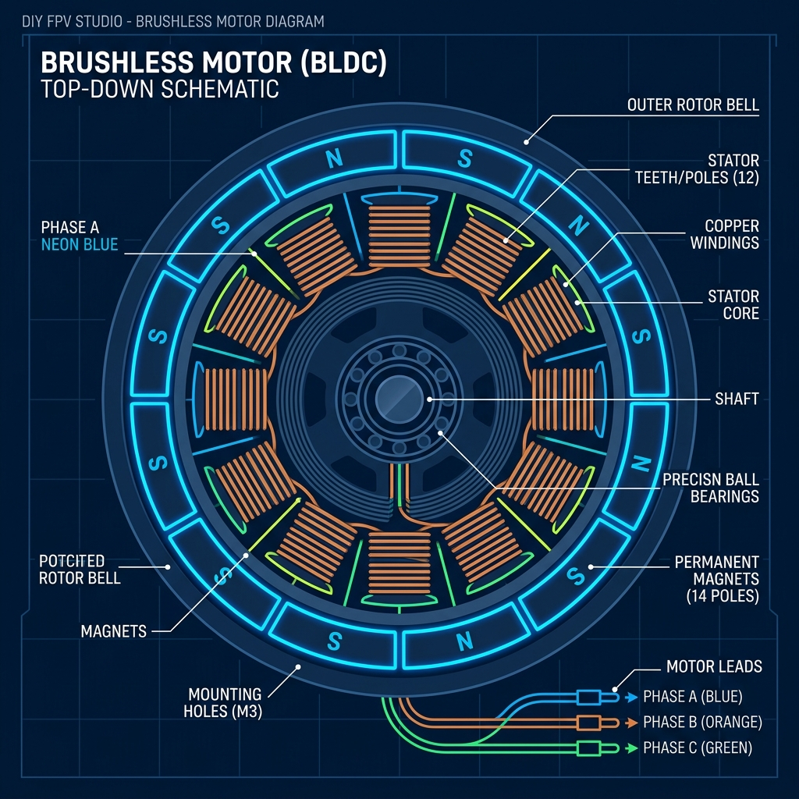
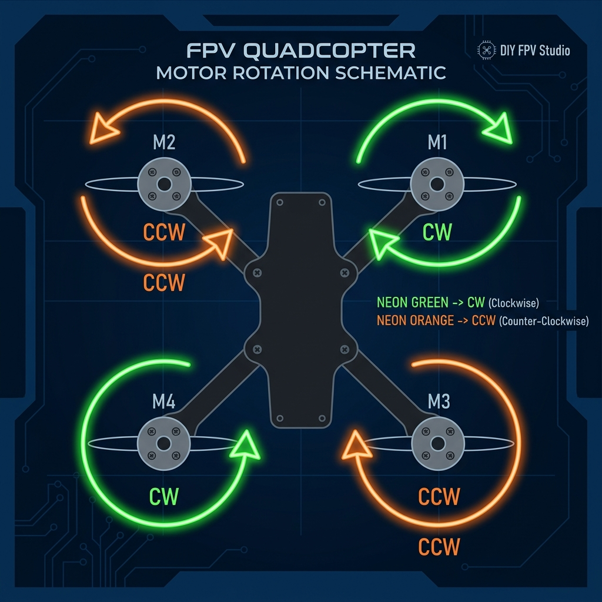
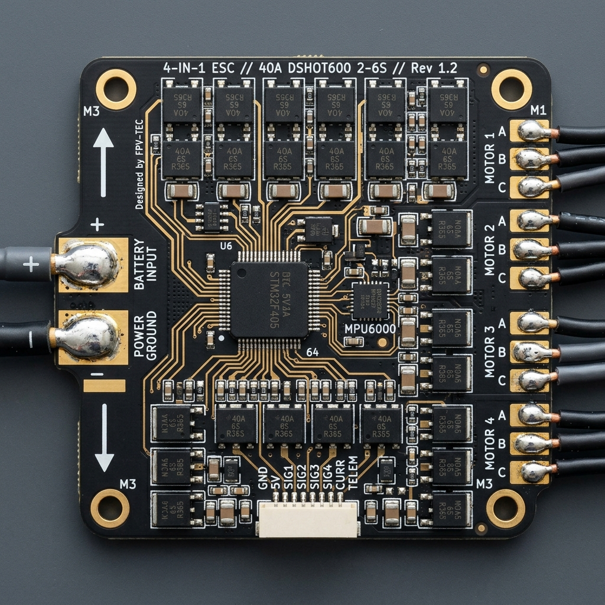
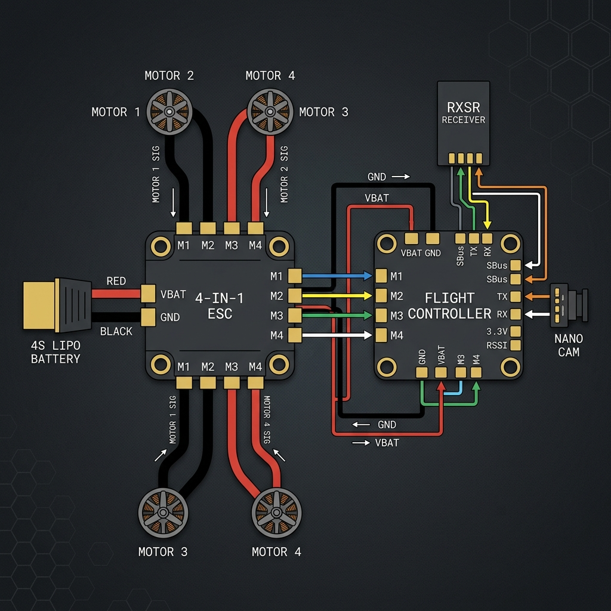
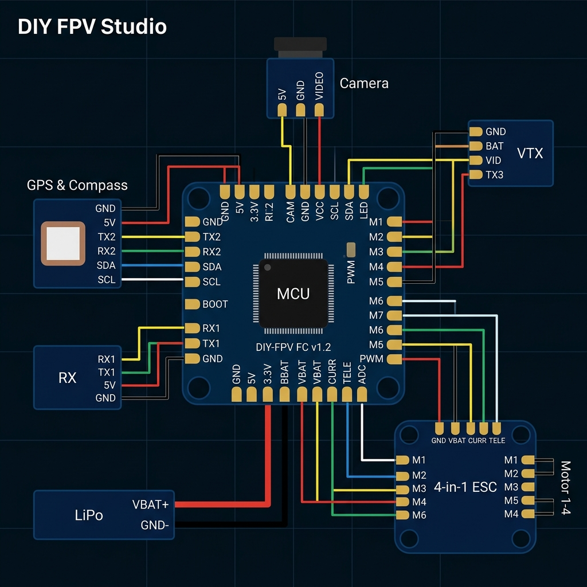
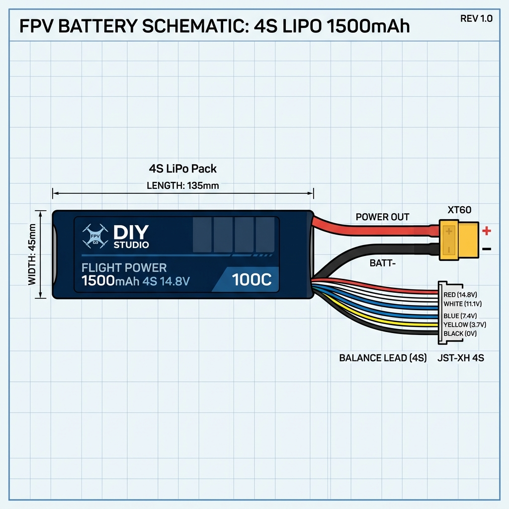

Drone Systems Engineering
A comprehensive, project-based engineering curriculum covering multirotor flight physics, hardware assembly, ArduPilot firmware, Mission Planner, sensor calibration, PID tuning, EKF log analysis, MAVLink Python automation, and PySimverse 3D simulation.
Course Objectives & Key Learning Outcomes
1. Multirotor Physics
Master lift, drag, thrust, weight, torque balance, and motor mixing matrices.
2. Hardware Assembly
Build quadcopters from scratch with DIY FPV Studio virtual DRC verification.
3. Sensor Calibration
Perform 6-position accelerometer, compass, radio, and power module calibrations.
4. PID Tuning
Tune rate and attitude control loops manually and using ArduPilot AutoTune.
5. EKF & Log Analysis
Diagnose sensor health, vibration levels, and EKF variance in Mission Planner.
6. MAVLink & Python
Program autonomous waypoint missions using Python and DroneKit API.
7. PySimverse AI
Simulate OpenCV vision target tracking and multi-drone swarms in 3D.
8. Capstone Flight
Design, fly, and analyze autonomous missions with evidence-based log reporting.
Drone Systems Engineering Practical Training Course
ArduPilot-Based Drone Design, Configuration and Autonomous Flight
Qualification Level: NQF Level 6
Duration: 14 Weeks
Version: 1.0
Course Information
Target Audience
This training course is designed for students enrolled in:
- Diploma in Computer Systems Engineering
- Diploma in Electronic Engineering
Prerequisites
Students should have completed:
- A first-year module in Electronics or Circuit Theory
- Basic proficiency in Python programming
- Familiarity with basic physics (force, mass, acceleration)
- Basic workshop skills (use of hand tools, soldering iron)
Course Objectives
Upon completion of this course, students will be able to:
- Explain the fundamental principles of multirotor flight, including lift, drag, thrust, torque, and motor mixing.
- Identify, select, and describe the function of every hardware subsystem in a professional quadcopter.
- Assemble a complete ArduPilot-based quadcopter from components, verifying electrical and mechanical integrity.
- Configure ArduPilot firmware using Mission Planner, including sensor calibration, flight modes, failsafes, and PID tuning.
- Diagnose faults systematically using flight log analysis, parameter inspection, and engineering reasoning.
- Explain the ArduPilot software architecture, including the Extended Kalman Filter (EKF), flight control loops, and MAVLink protocol.
- Design and execute autonomous missions using waypoints, RTL, and programmable flight modes.
- Interface ArduPilot with companion computers using MAVLink and Python scripting.
- Produce professional engineering reports that justify configuration decisions using quantitative evidence from flight logs.
Suggested Weekly Schedule
| Week | Topic | Activity |
|---|---|---|
| 1 | Flight Principles & Safety | Chapter 1 theory, safety induction |
| 2 | Hardware Deep-Dive | Chapter 2 theory, component identification |
| 3 | Pre-Build & Drone Assembly | Practical 2.5 Virtual Wiring, Chapter 3 mechanical & electrical build |
| 4 | ArduPilot Architecture | Chapter 4–5 theory, MAVLink inspection |
| 5 | Mission Planner & Frame Config | Practical 1 & 2 |
| 6 | Sensor Calibration | Practical 3 & 4 |
| 7 | Radio & Flight Modes | Practical 5 & 6 |
| 8 | Power, GPS & Motors | Practical 7, 8 & 9 |
| 9 | PID Tuning | Practical 10 |
| 10 | EKF & Log Analysis | Practical 11 & 12 |
| 11 | MAVLink Programming & SITL | Chapter 18 & 19 |
| 12 | Companion Computers & PySimverse | Chapter 20 & 21 |
| 13 | Capstone Project Work | Build, configure, fly, log analysis |
| 14 | Capstone Submission & Demo | Flight demonstration, engineering report |
Required Equipment — Bill of Materials
Per Student Group (2–3 students)
| # | Component | Specification | Qty |
|---|---|---|---|
| 1 | Quadcopter Frame | 450mm or 500mm wheelbase, glass-fibre or carbon composite | 1 |
| 2 | Flight Controller | Pixhawk-compatible (e.g., Pixhawk 6C, Cube Orange, Matek H743-Wing) | 1 |
| 3 | Brushless Motors | 2212 or 2216, 920–1000 KV | 4 |
| 4 | Electronic Speed Controllers (ESCs) | 30A, BLHeli_S or BLHeli_32, supporting DShot | 4 |
| 5 | Propellers | 10×4.5 or 9×4.7 (2 CW, 2 CCW) | 2 sets |
| 6 | LiPo Battery | 4S 5000mAh, 25C minimum | 1 |
| 7 | Battery Charger | Balance charger, compatible with 4S LiPo | 1 |
| 8 | Power Distribution Board (PDB) | With integrated 5V/12V BEC, or 4-in-1 ESC with PDB | 1 |
| 9 | Power Module | Voltage and current sensing (e.g., Mauch, Holybro PM02) | 1 |
| 10 | GPS Module | u-blox M8N or M10, with compass, on mast | 1 |
| 11 | RC Transmitter | Minimum 6-channel (e.g., RadioMaster Boxer, TX16S) | 1 |
| 12 | RC Receiver | Compatible with transmitter (ELRS or CRSF preferred) | 1 |
| 13 | Telemetry Radios | 433 MHz or 915 MHz pair (SiK-compatible) | 1 pair |
| 14 | USB Cable | Micro-USB or USB-C (matching flight controller) | 1 |
| 15 | Battery Strap | 20mm nylon strap with buckle | 2 |
| 16 | Mounting Hardware | M3 standoffs, nylon nuts, vibration dampeners, zip ties, double-sided tape | Assorted |
| 17 | Soldering Station | Temperature-controlled, with solder and flux | Shared |
| 18 | Multimeter | Digital, capable of DC voltage and continuity | 1 |
| 19 | LiPo Safety Bag | Fireproof charging bag | 1 |
| 20 | Hex Driver Set | 1.5mm, 2mm, 2.5mm, 3mm | 1 set |
Software Requirements (Per Student)
| Software | Purpose | Cost |
|---|---|---|
| Mission Planner | Ground control station, configuration, log analysis | Free |
| ArduPilot SITL | Software-In-The-Loop simulation | Free |
| MAVProxy | Command-line GCS and MAVLink analysis | Free |
| Python 3.10+ | Scripting and automation | Free |
| DroneKit-Python | High-level drone programming API | Free |
| pymavlink | Low-level MAVLink library | Free |
| PySimverse | Python-native 3D drone simulator for vision, AI & swarm logic | Free |
| OpenCV (opencv-python) | Computer vision library for vision-guided flight simulation | Free |
| Wireshark | MAVLink packet inspection (optional) | Free |
| DIY FPV Studio | Web browser for virtual component selection and wiring | Free |
Safety Declaration
⚠ IMPORTANT: Students must read and sign this declaration before commencing any practical work.
LiPo Battery Safety
- Never charge a LiPo battery unattended.
- Always use a fireproof LiPo safety bag during charging.
- Never charge a LiPo battery that is puffy, damaged, or punctured.
- Never discharge a LiPo below 3.3V per cell.
- Always use a balance charger at 1C or lower charging rate.
- Store LiPo batteries at storage voltage (3.8V per cell) when not in use.
- Dispose of damaged batteries at an approved facility — never in domestic waste.
Propeller & Motor Safety
- Always remove propellers before connecting a battery for bench testing.
- Never reach into the propeller arc while motors are armed.
- Always stand behind the drone during motor tests.
- Ensure all bystanders are at least 5 metres away during any powered test.
- Wear safety glasses when motors are running.
RF & Electromagnetic Safety
- Do not transmit on radio frequencies without appropriate authorisation.
- Keep telemetry antennas away from the body during transmission.
- Ensure the RC transmitter is powered on and linked before arming the drone.
Flight Regulations
- Students must be aware of their national civil aviation authority regulations (e.g., SACAA in South Africa).
- All flights must be conducted in approved areas, below maximum permitted altitude, and within visual line of sight (VLOS).
- No flight over people, near airports, or in restricted airspace without explicit authorisation.
Student Declaration
I, ______________________________, Student Number: _______________
have read and understood the safety rules above. I agree to follow all safety
procedures during this course. I understand that failure to comply may result
in removal from the practical session.
Signature: ___________________________ Date: _______________PART 1 — DRONE HARDWARE & SYSTEMS ENGINEERING
Chapter 1: Systems Engineering & Design Methodology for UAS
Learning Outcomes
By the end of this chapter, students will be able to:
- Explain the Systems Engineering V-Model lifecycle as applied to Unmanned Aircraft Systems (UAS).
- Develop a Concept of Operations (ConOps) and translate user requirements into quantitative technical specifications.
- Perform subsystem decomposition and create Interface Control Documents (ICDs) for drone electrical, mechanical, and data interfaces.
- Conduct engineering trade studies (e.g. Quadcopter vs Hexacopter vs Fixed-Wing vs VTOL, battery mass vs flight endurance).
- Conduct a Failure Mode and Effects Analysis (FMEA) to identify single-point failure modes and design failsafe redundancies.
- Align drone engineering designs with civil aviation authority regulatory frameworks (e.g., SACAA, FAA, EASA).
1.1 Systems Engineering Fundamentals & The V-Model
Modern Unmanned Aircraft Systems (UAS) are complex systems of systems. A drone is not merely an assembly of motors and propellers; it integrates aerodynamics, structural mechanics, power electronics, embedded computing, wireless communications, state estimation algorithms, and ground station software.
To manage this complexity, drone development follows the Systems Engineering V-Model:
graph TD
subgraph TOP_DOWN ["Decomposition & System Specification"]
A["1. User Needs & ConOps"] --> B["2. System Requirements"]
B --> C["3. Subsystem Architecture"]
C --> D["4. Detailed Component Selection"]
end
subgraph IMPLEMENTATION ["Physical Build & DRC"]
D --> BUILD["🛠️ HARDWARE BUILD & WIRING"]
end
subgraph BOTTOM_UP ["Integration & System Validation"]
BUILD --> E["5. Virtual DRC & Bench Testing"]
E --> F["6. Subsystem Bench Integration"]
F --> G["7. System Integration & SITL"]
G --> H["8. Flight Validation & Acceptance"]
end
A -. ConOps Trace .-> H
B -. Requirements Trace .-> G
C -. Architecture Trace .-> F
D -. Component Test Trace .-> E
style BUILD fill:#0284c7,stroke:#38bdf8,stroke-width:3px,color:#fff
style TOP_DOWN fill:rgba(30,58,138,0.12),stroke:#3b82f6
style BOTTOM_UP fill:rgba(16,185,129,0.12),stroke:#10b981The Lifecycle Phases:
- Left Side of the V (Decomposition & Design): Top-down definition of system requirements, architecture selection, and subsystem specification.
- Bottom of the V (Implementation): Virtual schematic verification (DIY FPV Studio) and component assembly.
- Right Side of the V (Integration & Validation): Bottom-up testing, sensor calibration, hardware-in-the-loop (SITL) simulation, PID tuning, and autonomous flight validation.
1.2 Concept of Operations (ConOps) & Requirements Engineering
Every drone engineering project begins with a Concept of Operations (ConOps) document defining what the system must accomplish, where it will operate, and under what constraints.
Translating ConOps to Engineering Requirements
| Stakeholder Need / ConOps | Engineering Requirement | Verification Metric |
|---|---|---|
| “Drone must inspect a 5-hectare solar farm” | Flight Endurance ≥ 20 minutes with 500g payload | Measured discharge curve on 4S 5000mAh battery |
| “Must operate safely in gusty coastal winds” | Max Thrust-to-Weight Ratio (TWR) ≥ 2.2:1 | Calculated thrust table ≥ 2.2 × MTOW |
| “Must not crash if telemetry link drops” | Automatic Return-To-Launch (RTL) on signal loss | Simulated failsafe trigger in ArduPilot SITL |
| “Must comply with SACAA BVLOS regulations” | Dual redundant GPS/Compass + ADS-B transponder | Protocol telemetry inspection |
1.3 Subsystem Decomposition & Interface Control Documents (ICD)
A quadcopter system decomposes into six primary hardware/software subsystems:
graph TD
UAS["🚁 UNMANNED AIRCRAFT SYSTEM (UAS)"]
UAS --> AF["1. Airframe & Structure"]
UAS --> PROP["2. Propulsion System"]
UAS --> FC["3. Flight Controller (FC)"]
UAS --> NAV["4. Navigation & Sensing"]
UAS --> COMM["5. Telemetry & Comms"]
UAS --> PWR["6. Power Subsystem"]
AF --> AF1["Carbon Frame 220mm"]
AF --> AF2["Hardware & Arm Skids"]
PROP --> PROP1["4x Brushless Motors"]
PROP --> PROP2["4-in-1 ESC & Props"]
FC --> FC1["STM32 MCU Board"]
FC --> FC2["ArduPilot ChibiOS"]
NAV --> NAV1["Dual IMU Gyro/Accel"]
NAV --> NAV2["Compass & M10 GPS"]
COMM --> COMM1["ELRS 2.4GHz Receiver"]
COMM --> COMM2["Telemetry Radio & VTX"]
PWR --> PWR1["4S LiPo Battery"]
PWR --> PWR2["Power Module & BEC"]
style UAS fill:#2563eb,stroke:#38bdf8,stroke-width:3px,color:#fffInterface Control Documents (ICD)
To ensure subsystems communicate reliably without electrical
damage or signal corruption, engineers construct an
Interface Control Document (ICD) defining: -
Electrical Interfaces: Power rails (5.0V BEC, 12V
VTX, 14.8V VBAT), max current draw, and ground loop isolation. -
Communication Interfaces: Serial protocols (UART
TX/RX baud rates, I2C bus SDA/SCL, SPI, CAN bus,
MAVLink telemetry). - Mechanical Interfaces: Bolt
hole spacing (e.g., 30.5×30.5mm stack, M3 vs M2 standoffs, motor
mounting pitch).
1.4 Engineering Trade Studies
Engineers use quantitative Trade Studies to select optimal hardware configurations by evaluating competing criteria.
Example Trade Study: Quadcopter vs. Hexacopter vs. VTOL Fixed-Wing
| Evaluation Criteria | Weight | Quadcopter (4 Motor) | Hexacopter (6 Motor) | VTOL Fixed-Wing |
|---|---|---|---|---|
| Flight Endurance | 25% | Moderate (15–25 min) | Low (12–18 min) | High (45–90 min) |
| Motor Redundancy | 25% | None (1 failure = crash) | Partial (Can land on 5 motors) | High (Wing glide mode) |
| Hover Precision | 20% | High (3D position hold) | High (3D position hold) | Moderate |
| Payload Capacity | 15% | Moderate (500g–1kg) | High (1.5kg–3kg) | High (1kg–2kg) |
| Build Complexity & Cost | 15% | Low (Simple 4-in-1 ESC) | Moderate (Higher weight & cost) | High (Complex servos & wings) |
| Weighted Score | 100% | 7.8 / 10 | 7.2 / 10 | 8.4 / 10 |
1.5 Failure Mode and Effects Analysis (FMEA)
Safety engineering requires anticipating potential system failures and implementing automated hardware/firmware mitigation strategies.
| Subsystem | Failure Mode | Cause | System Effect | Mitigation / Failsafe Action |
|---|---|---|---|---|
| Power | Battery voltage drop (< 13.2V) | Cell depletion | Complete thrust loss | ArduPilot BATT_LOW_VOLT triggers RTL or
Auto-Land |
| Radio Link | RC signal loss | Out of range / RF interference | Loss of pilot control | ArduPilot FS_THR_ENABLE triggers
Return-to-Launch |
| Sensors | GPS HDOP spike (> 2.5) | Satellite occlusion | EKF position drift | EKF lane switch or fallback to AltHold mode |
| Propulsion | Propeller fracture | Fatigue / impact | Catastrophic crash | Pre-flight inspection checklist + vibration monitoring |
1.6 Chapter 1 — Engineering Questions
- Draw and explain the Systems Engineering V-Model as applied to a multirotor drone project.
- Differentiate between a Concept of Operations (ConOps) and an Engineering Requirement.
- What is an Interface Control Document (ICD)? List three electrical and two data interface specifications included in an ICD for an ELRS receiver.
- Perform a trade study comparing a 4S LiPo vs a 6S LiPo power system for a 450mm quadcopter, considering current draw, motor KV, ESC stress, and battery mass.
- What is Failure Mode and Effects Analysis (FMEA)? Detail two potential single-point failure modes in a quadcopter and describe ArduPilot’s failsafe responses.
Chapter 2: Multirotor Flight Principles
Learning Outcomes
By the end of this chapter, students will be able to:
- Identify and describe the four fundamental forces acting on a multirotor in flight.
- Explain Newton’s Laws of Motion as applied to drone flight.
- Calculate hover thrust, total thrust, thrust-to-weight ratio, and maximum payload.
- Explain the relationship between motor speed, propeller pitch, and thrust generation.
- Describe the principles of torque balance and yaw control in a quadcopter.
1.1 The Four Forces of Flight
Every object in flight is subject to four fundamental forces. For a multirotor, these forces operate differently than for a fixed-wing aircraft, but the underlying physics is identical.
Lift (Thrust)
In a multirotor, lift is generated by thrust. Each motor spins a propeller that accelerates air downward. By Newton’s Third Law, an equal and opposite force pushes the drone upward. Unlike a fixed-wing aircraft, where lift comes from airflow over a wing, a multirotor generates all of its lift from its propellers.
The thrust produced by a single motor-propeller combination depends on:
- Motor KV rating (RPM per volt)
- Propeller diameter and pitch
- Input voltage (number of battery cells)
- Air density (altitude and temperature)
Thrust Equation (Simplified):
T = C_T × ρ × n² × D⁴Where: - T = Thrust (N) - C_T =
Thrust coefficient (dimensionless, depends on propeller design) -
ρ = Air density (kg/m³), approximately 1.225 kg/m³ at
sea level - n = Propeller rotational speed
(revolutions per second) - D = Propeller diameter
(m)
Engineering Note: In practice, motor manufacturers provide thrust tables that give thrust in grams at various throttle percentages and voltages. Students should use these tables for design calculations rather than computing from first principles.
Weight (Gravity)
Weight is the force due to gravity acting on the total mass of the drone:
W = m × gWhere: - W = Weight (N) - m = Total
mass (kg) — including frame, motors, battery, flight controller,
payload - g = Gravitational acceleration (9.81
m/s²)
For a drone to hover, the total thrust from all motors must exactly equal the weight:
Hover condition: T_total = WDrag
Drag is the aerodynamic resistance opposing motion through the air. For a multirotor, drag affects:
- Translational movement — air resistance as the drone moves horizontally
- Propeller drag — resistance experienced by each propeller blade as it rotates
Drag increases with speed and is proportional to the square of velocity:
F_drag = ½ × ρ × v² × C_d × AWhere: - v = Velocity (m/s) - C_d =
Drag coefficient - A = Frontal cross-sectional area
(m²)
Thrust (Propulsive Force)
While “lift” keeps the drone airborne, additional thrust is used for manoeuvring. A quadcopter manoeuvres by differentially varying the speed of individual motors:
| Manoeuvre | Motor Speed Adjustment |
|---|---|
| Pitch forward | Rear motors speed up, front motors slow down |
| Pitch backward | Front motors speed up, rear motors slow down |
| Roll left | Right motors speed up, left motors slow down |
| Roll right | Left motors speed up, right motors slow down |
| Yaw clockwise | CW motors speed up, CCW motors slow down |
| Yaw counter-clockwise | CCW motors speed up, CW motors slow down |
| Ascend | All motors speed up equally |
| Descend | All motors slow down equally |
1.2 Newton’s Laws Applied to Drone Flight
First Law (Inertia)
A drone hovering in still air will remain stationary unless a net force acts on it. If one motor produces less thrust (e.g., a faulty ESC), the drone will drift in the direction of the imbalance.
Practical implication: This is why ArduPilot’s Stabilize mode continuously adjusts motor speeds — to counteract disturbances and maintain stable hover.
Second Law (F = ma)
The acceleration of the drone is directly proportional to the net force and inversely proportional to its total mass:
a = F_net / mA heavier drone (larger m) requires more thrust to
achieve the same acceleration. This is why the
thrust-to-weight ratio is a critical design
parameter.
Third Law (Action-Reaction)
The propellers push air downward; the air pushes the drone upward. This is the fundamental mechanism of thrust generation. Additionally, as a propeller spins, it exerts a torque reaction on the frame. This is why quadcopters use two clockwise (CW) and two counter-clockwise (CCW) propellers — to cancel out the net torque and prevent uncontrolled yaw.
1.3 Torque, Moments, and Yaw Control
Torque Reaction
Every spinning motor exerts a reaction torque on the drone frame in the direction opposite to its rotation. If all four motors spun in the same direction, the drone body would spin uncontrollably.
Solution: In a standard quadcopter configuration:
Motor 1 (Front Right) — CCW rotation
Motor 2 (Rear Left) — CCW rotation
Motor 3 (Front Left) — CW rotation
Motor 4 (Rear Right) — CW rotationThe net torque is:
τ_net = (τ_CW_1 + τ_CW_2) - (τ_CCW_1 + τ_CCW_2)In balanced hover, τ_net = 0.
Yaw Control
To yaw (rotate about the vertical axis), ArduPilot increases the speed of one pair of motors (e.g., CW) and decreases the other pair (CCW). This creates a net torque imbalance, causing the drone to rotate.
Key Insight: Yaw control does not use control surfaces. It relies entirely on differential motor torque. This is unique to multirotors.
1.4 Engineering Design Calculations
Students must be able to perform the following calculations when designing or evaluating a drone:
Calculation 1: Total Drone Weight
W_total = m_frame + m_motors + m_ESCs + m_FC + m_battery + m_GPS + m_props + m_wiring + m_payloadWorked Example:
| Component | Mass (g) |
|---|---|
| Frame (450mm) | 280 |
| Motors (4 × 60g) | 240 |
| ESCs (4 × 25g) | 100 |
| Flight Controller | 40 |
| GPS + Compass | 30 |
| Battery (4S 5000mAh) | 480 |
| Propellers (4 × 12g) | 48 |
| Wiring, PDB, connectors | 60 |
| RC Receiver | 10 |
| Telemetry Radio | 20 |
| Total | 1,308 g |
W = 1.308 kg × 9.81 m/s² = 12.83 NCalculation 2: Hover Thrust Per Motor
T_hover_per_motor = W_total / N_motorsT_hover_per_motor = 12.83 N / 4 = 3.21 N ≈ 327 g per motorEach motor must produce at least 327 g of thrust at hover throttle (~50%).
Calculation 3: Thrust-to-Weight Ratio (TWR)
TWR = T_total_max / W_totalDesign guideline: A TWR of 2:1 or higher is recommended for a stable, responsive quadcopter. Below 1.5:1, the drone will feel sluggish and have poor wind resistance.
If each motor produces a maximum of 800g of thrust:
T_total_max = 4 × 800g = 3,200g = 3.2 kg
TWR = 3.2 / 1.308 = 2.45:1 ✓ (Good)Calculation 4: Maximum Payload
Payload_max = (T_total_max / g) - m_total_without_payloadUsing a minimum TWR of 1.5:1 for safe flight:
m_max_total = T_total_max / (1.5 × g)
Payload_max = m_max_total - m_dronem_max_total = (3.2 × 9.81) / (1.5 × 9.81) = 2.133 kg
Payload_max = 2,133g - 1,308g = 825gThe drone can carry a maximum payload of approximately 825g while maintaining a TWR of 1.5:1.
Calculation 5: Flight Time Estimation
Flight_time (min) ≈ (Battery_capacity_mAh × 60) / (Average_current_draw_mA × 1000) × 0.8The 0.8 factor accounts for the recommended 80% discharge limit to preserve battery health.
If the average hover current draw is 15A:
Flight_time ≈ (5000 × 60) / (15,000 × 1000) × 0.8
≈ (300,000 / 15,000) × 0.8
≈ 20 × 0.8
≈ 16 minutesRecommended Video Resources
- Joshua Bardwell: FPV Drone Budget Build Tutorial
1.5 Chapter 1 — Engineering Questions
- A quadcopter has a total mass of 1.5 kg. Calculate the hover thrust required per motor.
- Each motor on a hexacopter produces a maximum of 1.2 kg of thrust. The hexacopter weighs 4.2 kg. Calculate the thrust-to-weight ratio. Is this acceptable?
- Explain why a quadcopter uses two CW and two CCW propellers.
- A drone is hovering in a 15 km/h crosswind. Using Newton’s First Law, explain what happens if the flight controller loses power.
- A student wants to add a 500g camera to the quadcopter described in the worked example above. Recalculate the TWR. Will the drone still fly safely?
- Explain the difference between thrust and lift in the context of multirotor flight.
- Why does increasing altitude reduce the thrust output of a propeller?
- A motor manufacturer states that a 2216/920KV motor produces 750g of thrust at 100% throttle on a 4S battery with 10×4.5 propellers. Calculate the maximum all-up weight for a quadcopter using these motors at a TWR of 2:1.
- Describe two consequences of operating a quadcopter with a TWR below 1.5:1.
- Estimate the flight time of a quadcopter with a 6S 8000mAh battery drawing an average of 22A in hover. Apply the 80% discharge safety factor.
Chapter 2: Hardware Subsystem Deep-Dive
Learning Outcomes
By the end of this chapter, students will be able to:
- Identify and describe the function of every hardware component in a quadcopter.
- Read and interpret motor, ESC, and battery specifications.
- Explain the role of the flight controller, GPS, compass, and power module.
- Select appropriate components for a given drone design specification.
- Describe the differences between RC protocols (PWM, PPM, SBUS, CRSF, ELRS).
2.1 Airframe (Frame)
The airframe is the structural skeleton of the drone. It holds all components in place and must withstand the stresses of flight, vibration, and landing impacts.
Frame Configurations
| Configuration | Arms | Motors | Redundancy | Typical Use |
|---|---|---|---|---|
| Tricopter | 3 | 3 | None | Experimental, photography |
| Quadcopter (X) | 4 | 4 | None | General purpose, training |
| Quadcopter (+) | 4 | 4 | None | Acrobatic |
| Hexacopter | 6 | 6 | Can lose 1 motor | Professional photography, mapping |
| Octocopter | 8 | 8 | Can lose 1–2 motors | Heavy lift, industrial |
| Y6 (Coaxial Hex) | 3 | 6 | Can lose 1 motor | Compact, heavy lift |
| X8 (Coaxial Octo) | 4 | 8 | Can lose 1–2 motors | Cinema, heavy payload |
Frame Materials
| Material | Weight | Strength | Cost | Vibration Damping |
|---|---|---|---|---|
| Glass Fibre (GF) | Medium | Good | Low | Moderate |
| Carbon Fibre (CF) | Low | Excellent | High | Low (brittle) |
| Aluminium | High | Good | Medium | Low |
| 3D-Printed (PLA/PETG) | High | Fair | Very Low | High |
| 3D-Printed (Nylon/CF-Nylon) | Medium | Good | Medium | Moderate |
Common Drone Size Categories
- Micro / TinyWhoop (65mm - 85mm): Built for indoor flying, featuring ducted propellers for safety.
- 3-inch Cinewhoop: Designed to safely carry HD cameras (like GoPros) near people or indoors.
- 5-inch Freestyle / Racing: The industry standard size (210mm-250mm wheelbase). Perfect balance of power, weight, and agility.
- 7-inch Long Range: Focused on efficiency, capable of carrying large batteries for flights over 15+ minutes.
Frame Geometries
- True-X: Perfectly symmetrical. Motors are equidistant. Best for freestyle and racing as it handles equally well on all axes.
- Squashed-X / Wide-X: Wider stance side-to-side. Offers slightly better roll stability.
- Deadcat: Front arms are swept back so the propellers do not appear in the FPV or HD camera’s field of view. Popular for cinematic flying.
Key Frame Specifications
- Wheelbase: Distance between diagonally opposite motors (e.g., 450mm, 500mm, 650mm). Larger wheelbase = more stable, but heavier and slower.
- Arm thickness: Must support the weight without flexing.
- Motor mount pattern: Typically M3 bolts on a 16mm or 19mm hole pattern.
- Stack mounting: Standard 30.5×30.5mm or 20×20mm M3/M2 mounting for flight controller and ESC stacks.
2.2 Brushless Motors

Figure 2: Exploded view of a brushless outrunner motor.Brushless DC (BLDC) motors convert electrical energy into rotational mechanical energy. Unlike brushed motors, they have no physical brushes and use electronic commutation (via the ESC) for higher efficiency, longer lifespan, and greater power.
Motor Anatomy
A typical outrunner brushless motor consists of:
- Stator — stationary inner core with copper windings
- Rotor — outer rotating bell with permanent magnets
- Bearings — typically two ball bearings for smooth rotation
- Shaft — extends through the centre, prop mounts on top
- Base plate — mounting interface with threaded holes
Motor Naming Convention
Motors are named using a 4-digit code: XXYY
- XX = Stator diameter (mm)
- YY = Stator height (mm)
Example: A 2212 motor has a 22mm diameter stator that is 12mm tall.
General rule: Larger stator = more torque, more thrust, heavier, draws more current.
| Motor Size | Typical Use | Prop Size | Typical KV |
|---|---|---|---|
| 1806 | 180mm micro quads | 5” | 2300–2600 |
| 2205 | 210mm racing quads | 5” | 2300–2600 |
| 2212 | 450mm general purpose | 9–10” | 920–1000 |
| 2216 | 450–500mm general purpose | 10” | 880–920 |
| 3508 | 550–650mm heavy lift | 13–15” | 380–580 |
| 4010 | 650mm+ cinema/mapping | 15–17” | 370–480 |
KV Rating
The KV rating indicates the theoretical RPM per volt with no load:
RPM_no_load = KV × V_batteryExample: A 920KV motor on a 4S battery (14.8V nominal):
RPM = 920 × 14.8 = 13,616 RPM (no load)Under load (with propeller), the actual RPM will be significantly lower.
Low KV motors (< 700 KV): - Spin large propellers slowly - High torque, high efficiency - Used for heavy lift and long endurance
High KV motors (> 2000 KV): - Spin small propellers fast - Lower torque, more responsive - Used for racing and acrobatics
Motor Specifications to Record
For each motor in the build, students should document:
| Parameter | Value |
|---|---|
| Model | |
| Stator size (mm) | |
| KV rating | |
| Maximum voltage | |
| Maximum continuous current (A) | |
| Maximum thrust (g) at target voltage | |
| Weight (g) | |
| Shaft diameter (mm) | |
| Mounting hole pattern (mm) | |
| Recommended propeller size |
2.3 Propellers
Propellers convert rotational energy from the motor into thrust by accelerating air downward.
Propeller Naming Convention
Propellers are described using two numbers: D × P
- D = Diameter (inches) — the total span of the propeller
- P = Pitch (inches) — the theoretical distance the propeller advances in one revolution
Example: A 10×4.5 propeller is 10 inches in diameter with a 4.5-inch pitch.
Higher diameter = more thrust, more current
draw, slower response
Higher pitch = more aggressive bite, more current
draw, higher top speed
CW and CCW Propellers

Figure 3: Standard Quad-X motor rotation configuration.Quadcopters require two types of propellers:
- CW (Clockwise) — also called “pusher” propellers
- CCW (Counter-Clockwise) — also called “tractor” or “normal” propellers
They must be installed on the correct motors. Installing a CW propeller on a CCW motor will produce downward thrust and the drone will flip on takeoff.
⚠ CRITICAL: Propeller installation errors are the #1 cause of crash on first flight. Always verify propeller direction before every flight.
Propeller Blade Counts
While almost all training drones use bi-blade (2-blade) propellers for simplicity and efficiency, modern FPV drones utilize various configurations:
- Bi-blade (2 blades): Higher top speed, better efficiency, but less grip in corners. Best for long-range cruising.
- Tri-blade (3 blades): The FPV standard. Offers excellent cornering grip, smoother flight, and rapid throttle response, at the cost of slightly lower efficiency.
- Multi-blade (4+ blades): Commonly used on Cinewhoops for extremely smooth indoor flight and generating high thrust from very small diameters.
Matching Propeller Size to Frame
Propeller size dictates the required motor and frame size. A common rule of thumb for standard builds:
- 3-inch Props: Require 3-inch frames and high KV micro motors (e.g., 1404 size).
- 5-inch Props: Require 5-inch frames (210mm+) and standard motors (e.g., 2207 or 2306 size, 1700KV - 2500KV).
- 7-inch Props: Require 7-inch frames and large stator, low KV motors (e.g., 2806 size, 1300KV).
Propeller Materials
| Material | Durability | Weight | Balance | Cost |
|---|---|---|---|---|
| Plastic (Nylon) | Low | Heavy | Fair | Very Low |
| Glass-Fibre Nylon | Medium | Medium | Good | Low |
| Carbon Fibre | High | Light | Excellent | High |
| Wooden (Beech) | Low | Light | Variable | Medium |
For training purposes, glass-fibre nylon propellers are recommended — they are durable enough for student use but inexpensive enough to replace frequently.
2.4 Electronic Speed Controllers (ESCs)

Figure 4: A 4-in-1 Electronic Speed Controller (ESC) board.An ESC converts the DC battery voltage into a three-phase AC signal that drives the brushless motor. The flight controller sends a throttle command to each ESC, which then adjusts the motor speed accordingly.
ESC Architecture

Figure 4.1: Data and power flow through an Electronic Speed Controller.ESC Specifications
| Parameter | Description |
|---|---|
| Continuous current (A) | Maximum sustained current — must exceed motor’s maximum continuous draw |
| Burst current (A) | Short-duration peak current capability |
| Input voltage range | Must match battery voltage (e.g., 2S–6S) |
| Signal protocol | PWM, OneShot125, OneShot42, DShot150/300/600/1200, Multishot |
| Firmware | BLHeli_S, BLHeli_32, AM32 |
| BEC output | Some ESCs have built-in voltage regulators (5V/3A) |
Signal Protocols
| Protocol | Type | Speed | Bidirectional | Recommended |
|---|---|---|---|---|
| PWM | Analogue | ~50 Hz | No | Legacy only |
| OneShot125 | Analogue | ~1–8 kHz | No | Older builds |
| DShot300 | Digital | 300 kbit/s | Yes (with telemetry) | General purpose |
| DShot600 | Digital | 600 kbit/s | Yes | Recommended |
| DShot1200 | Digital | 1200 kbit/s | Yes | Racing |
Why DShot is preferred: - Digital protocol — no need for ESC calibration - No signal noise or jitter - Bidirectional telemetry (motor RPM, temperature, current) - Precise, repeatable throttle commands
4-in-1 ESC vs. Individual ESCs
| Feature | 4-in-1 ESC | Individual ESCs |
|---|---|---|
| Wiring | Minimal — single board | More complex — 4 separate units |
| Replacement | Must replace entire board | Replace only the failed ESC |
| Weight | Lighter (shared components) | Heavier |
| Heat management | Centralised — may run hotter | Distributed — better cooling |
| Debugging | Harder to isolate faults | Easier to isolate |
For training purposes, individual ESCs are recommended because students can trace signals to each motor independently.
2.5 Flight Controller

Figure 5: A modern FPV drone Flight Controller (FC).The flight controller (FC) is the brain of the drone. It reads sensor data, runs the ArduPilot firmware, computes control commands, and sends throttle signals to the ESCs.
Core Components of a Flight Controller
| Component | Function |
|---|---|
| Microprocessor (MCU) | Runs ArduPilot firmware (typically STM32 F4/F7/H7) |
| IMU (Inertial Measurement Unit) | Accelerometer + Gyroscope — measures orientation and angular velocity |
| Barometer | Measures atmospheric pressure for altitude estimation |
| Flash Memory | Stores flight logs |
| SD Card Slot | Extended logging storage |
| UART Ports | Serial communication (GPS, telemetry, companion computer) |
| I²C Port | External compass, OLED display |
| SPI Bus | Internal high-speed sensor communication |
| CAN Bus | DroneCAN peripherals (GPS, compass, airspeed sensor) |
| PWM/DShot Outputs | Motor signal outputs |
| Safety Switch | Optional — prevents accidental arming |
| Buzzer Output | Audio alerts (GPS lock, battery warning, arm/disarm) |
| LED Output | Addressable LEDs for status indication |
Common Pixhawk-Class Flight Controllers
| Flight Controller | MCU | IMUs | Barometers | UARTs | Size |
|---|---|---|---|---|---|
| Pixhawk 6C | STM32H743 | 2 | 2 | 6 | 30.5×30.5mm |
| Cube Orange+ | STM32H757 | 3 | 2 | 5 | Cube form factor |
| Matek H743-Wing | STM32H743 | 1 | 2 | 7 | 44×29mm |
| Holybro Kakute H7 V2 | STM32H743 | 1 | 1 | 7 | 30.5×30.5mm |
Engineering Note: The presence of multiple redundant IMUs and barometers allows ArduPilot’s EKF to cross-check sensor readings and detect failures.
2.6 Power Distribution
Power distribution routes the battery voltage to all components that need it.
Power Distribution Architecture
%%{init: {'theme':'base', 'themeVariables': {'primaryColor':'#ffffff', 'primaryTextColor':'#000000', 'primaryBorderColor':'#000000', 'lineColor':'#000000', 'tertiaryColor':'#ffffff'}}}%%
graph TD
Batt[Battery 4S LiPo 14.8V-16.8V] --> PM[Power Module]
Batt --> PDB[PDB / Main Power Bus]
Batt --> BEC[BEC 5V/12V regulator]
PM -->|5V via BEC| FC[Flight Controller]
PM -.->|Voltage & Current Sensing| FCA[FC Analogue Input]
PDB --> ESC1[ESC 1] --> M1[Motor 1]
PDB --> ESC2[ESC 2] --> M2[Motor 2]
PDB --> ESC3[ESC 3] --> M3[Motor 3]
PDB --> ESC4[ESC 4] --> M4[Motor 4]
BEC --> RC[RC Receiver]
BEC --> GPS[GPS Module]
BEC --> Telemetry[Telemetry Radio]
BEC --> FPV[FPV System]
Key Voltage Rails
| Rail | Voltage | Source | Powers |
|---|---|---|---|
| Battery | 14.8V–16.8V (4S) | LiPo battery | ESCs, motors |
| Main 5V | 5.0V regulated | Power module or BEC | Flight controller, GPS, RC receiver |
| Servo Rail | 5.0V–8.4V | BEC or ESC BEC | Servos, peripherals |
| 12V (optional) | 12.0V regulated | BEC | FPV transmitter, camera |
2.7 GPS Module
The GPS module provides the drone’s geographic position (latitude, longitude, altitude) and is essential for position-hold modes (Loiter, Auto, RTL).
GPS Specifications
| Parameter | Description |
|---|---|
| Chipset | u-blox M8N (standard), M10 (newer, faster fix) |
| Update rate | 5–10 Hz |
| Position accuracy | 2.5m CEP (circular error probable) |
| HDOP | Horizontal Dilution of Precision — lower is better (< 1.4 ideal) |
| Time to First Fix (TTFF) | Cold start: 26s, Hot start: 1s |
| Satellite systems | GPS, GLONASS, BeiDou, Galileo |
GPS Mast
The GPS module should be mounted on a mast elevated 10–15cm above the drone body to:
- Reduce magnetic interference from motors, ESCs, and battery wiring
- Improve satellite signal reception
- Reduce vibration-induced position noise
2.8 Compass (Magnetometer)
The compass provides heading (yaw) information. Most GPS modules include an integrated compass (typically an IST8310 or HMC5883L).
Magnetic Interference
Compasses are extremely sensitive to nearby magnetic fields. Sources of interference on a drone include:
- Motors (strong permanent magnets)
- Battery and high-current wiring
- ESCs
- Metal screws and frame components
This is why compass calibration (Practical 4) is critical, and why the GPS/compass is mounted on a mast away from these interference sources.
2.9 Radio Control (RC) System
The RC system provides manual pilot control of the drone. It consists of a transmitter (held by the pilot) and a receiver (on the drone).
Minimum Channels Required
| Channel | Function | Stick |
|---|---|---|
| 1 | Roll (Aileron) | Right stick, horizontal |
| 2 | Pitch (Elevator) | Right stick, vertical |
| 3 | Throttle | Left stick, vertical |
| 4 | Yaw (Rudder) | Left stick, horizontal |
| 5 | Flight Mode | 3-position switch |
| 6 | Auxiliary (e.g., RTL, Kill Switch) | Toggle switch |
RC Protocols Comparison
| Protocol | Channels | Latency | Range | Wiring |
|---|---|---|---|---|
| PWM | 1 per wire | ~22ms | Moderate | 1 wire per channel |
| PPM | 8 | ~22ms | Moderate | 1 wire |
| SBUS | 16 | ~6ms | Long | 1 wire (inverted UART) |
| CRSF (Crossfire) | 16 | ~4ms | Very Long (50km+) | 1 wire (UART) |
| ELRS | 16 | ~2ms | Very Long (100km+) | 1 wire (UART) |
Recommended: ELRS or CRSF for new builds — lowest latency, longest range, single-wire connection.
2.10 Telemetry System
Telemetry radios provide a wireless data link between the drone’s flight controller and the ground station (Mission Planner). This allows real-time monitoring of:
- Attitude (roll, pitch, yaw)
- GPS position and altitude
- Battery voltage and current
- Flight mode
- EKF status
- Error messages
Standard Telemetry Setup
%%{init: {'theme':'base', 'themeVariables': {'primaryColor':'#ffffff', 'primaryTextColor':'#000000', 'primaryBorderColor':'#000000', 'lineColor':'#000000', 'tertiaryColor':'#ffffff'}}}%%
graph LR
FC[Flight Controller UART] --> AirRad[Telemetry Radio Air]
AirRad == "433/915 MHz" === GndRad[Telemetry Radio Ground]
GndRad --> USB[USB]
USB --> MP[Mission Planner]
Common telemetry radios use the SiK firmware on HopeRF HM-TRP modules:
| Parameter | Value |
|---|---|
| Frequency | 433 MHz or 915 MHz (region-dependent) |
| Range | 1–2 km (standard), up to 5 km (high-power) |
| Data rate | 57,600 baud (default), adjustable |
| Power | 100mW (20 dBm) typical |
2.11 LiPo Battery

Figure 6: A 4S LiPo battery with main power and balance connectors.Lithium Polymer (LiPo) batteries are the standard power source for drones due to their high energy density and high discharge rate.
Battery Naming Convention
A battery is described as: XS YYYY mAh ZZC
- XS = Number of cells in series (voltage)
- YYYY mAh = Capacity in milliamp-hours
- ZZC = Maximum continuous discharge rate
Example: 4S 5000mAh 25C
| Parameter | Value |
|---|---|
| Cells in series | 4 |
| Nominal voltage | 4 × 3.7V = 14.8V |
| Fully charged voltage | 4 × 4.2V = 16.8V |
| Capacity | 5000mAh (5Ah) |
| Maximum continuous discharge | 25C × 5A = 125A |
Cell Voltage Reference
| State | Voltage Per Cell | Total (4S) |
|---|---|---|
| Fully charged | 4.20V | 16.8V |
| Nominal | 3.70V | 14.8V |
| Storage | 3.80V | 15.2V |
| Low warning | 3.50V | 14.0V |
| Critically low | 3.30V | 13.2V |
| Damaged (over-discharged) | < 3.00V | < 12.0V |
⚠ WARNING: Never discharge a LiPo cell below 3.3V. Over-discharge causes permanent internal damage and may result in fire during subsequent charging.
2.12 FPV Video Systems & Displays (Cameras, VTX, Goggles, Analog vs Digital HD)
First-Person View (FPV) video systems transmit a real-time video feed from an onboard camera directly to the pilot’s FPV goggles or ground monitor. This gives the pilot the sensation of sitting in the cockpit, enabling precise manual navigation, obstacle avoidance, visual inspection, and real-time telemetry overlay via On-Screen Display (OSD).
┌────────────┐ ┌──────────────────┐ ┌─────────────┐
│ FPV Camera │ ──────>│ Video Transmitter│ ──────>│ 5.8GHz VTX │
│ (NTSC/HD) │ │ (VTX / Air) │ │ Antenna │
└────────────┘ └──────────────────┘ └─────────────┘
│ (RF)
▼
┌────────────┐ ┌──────────────────┐ ┌─────────────┐
│ FPV Goggle │ <──────│ Video Receiver │ <──────│ VRX Patch/ │
│ (OLED/LCD) │ │ (VRX / Diversity)│ │ Omni Antenna│
└────────────┘ └──────────────────┘ └─────────────┘2.12.1 The FPV Signal Chain & On-Screen Display (OSD)
The complete FPV signal chain consists of: 1. FPV Camera: Captures visual imagery from the front of the aircraft. 2. On-Screen Display (OSD): Overlay engine (either onboard the FC or integrated into digital VTXs) that superimposes real-time flight telemetry (battery voltage, altitude, GPS satellite count, horizon line, flight mode) onto the video stream. 3. Video Transmitter (VTX): Converts the camera/OSD video feed into a 5.8 GHz radio frequency (RF) signal. 4. Antennas: Circularly or linearly polarized antennas that radiate and collect the RF signal. 5. Video Receiver (VRX) & Goggles: Receives the RF signal, decodes the video, and renders it onto low-latency goggle displays.
2.12.2 FPV Cameras & Sensor Specifications
FPV cameras differ from HD action cameras (like GoPro or Insta360). FPV cameras prioritize ultra-low latency (less than 10ms processing delay) over heavy image processing.
Key camera parameters include: - Sensor Type: CMOS (standard, lower power, high dynamic range) vs. CCD (legacy, no rolling shutter artifact). - Field of View (FOV): Typically 150° to 170° wide-angle lens, allowing the pilot to maintain spatial awareness when pitched forward in flight. - Aspect Ratio: 4:3 (traditional square format filling binocular goggles) vs. 16:9 (widescreen format matching modern OLED panels). - Wide Dynamic Range (WDR): Essential for maintaining visibility when flying rapidly between bright sunlight and dark shadows.
2.12.3 Video Transmitters (VTX) & 5.8 GHz Frequencies
Most FPV systems transmit over the 5.8 GHz ISM band, divided into standardized frequency bands (Raceband, Fatshark, Band A, B, E, F) with 8 channels per band.
Raceband Channels (MHz):
R1: 5658 | R2: 5695 | R3: 5732 | R4: 5769 | R5: 5806 | R6: 5843 | R7: 5880 | R8: 5917Key VTX Parameters & Protocols: - Transmit Power (mW): Adjustable from 25 mW (pit mode / indoor safety), 200 mW (standard flying), up to 800 mW–1W+ (long-range flights). Higher power increases range but generates substantial heat requiring airflow over the heat sink. - SmartAudio & Tramp Protocols: Single-wire UART control protocols connecting the VTX to the flight controller. Allows pilots to switch VTX channels, bands, and power levels directly from Mission Planner, RC transmitter Lua scripts, or OSD menus without pressing physical VTX buttons.
2.12.4 FPV Antennas & RF Polarization
Radio frequency signals require matched antennas to maximize range and prevent signal multipathing (ghosting caused by signal bounces off walls or ground).
- Linear Polarization (Dipole / Whip): Compact and lightweight, but signal quality drops sharply when the drone tilts during banks or rolls.
- Circular Polarization (CP): Signal rotates in a helix (Right-Hand Circular Polarized - RHCP or Left-Hand Circular Polarized - LHCP). Highly resistant to multipath rejection and maintains signal strength regardless of drone orientation. Transmitter and receiver antennas must match polarization (RHCP with RHCP, or LHCP with LHCP).
- Omnidirectional vs. Directional (Patch)
Antennas:
- Omni Antennas: Radiate in a 360° donut pattern; best for general flying around the pilot.
- Patch / Helical Antennas: Focus RF energy into a narrow directional beam; provides high gain and long range in a specific direction.
- Diversity Receivers: Dual-receiver modules in goggles that continuously compare two antennas (e.g., one omni and one patch) and switch to or blend the strongest signal.
2.12.5 Analog vs. Digital HD Video Systems
Modern drone engineering requires choosing between traditional Analog FPV and high-definition Digital HD FPV.
| Metric | Analog FPV | Digital HD — DJI O3 | Digital HD — Walksnail Avatar | Digital HD — HDZero |
|---|---|---|---|---|
| Resolution | Standard Def (480i / NTSC) | 1080p / 4K 60fps | 1080p / 60–120fps | 720p / 1080p 60–90fps |
| Latency | 15–25 ms (Fixed) | 30–40 ms (Variable) | 22–35 ms (Variable) | 14–15 ms (Fixed) |
| Signal Breakup | Snow/Static (Graceful) | Pixelation / Frame Drop | Pixelation / Softening | Static Dots (Graceful) |
| Onboard Recording | External DVR only | 4K 60fps H.265 (No GoPro needed) | 1080p / 4K onboard DVR | 720p / 1080p DVR |
| ArduPilot OSD | Analogue MAX7456 chip | MSP DisplayPort | MSP DisplayPort | MSP DisplayPort |
| Cost | Low ($20–$50 VTX) | High ($230+ Air Unit) | Moderate ($90–$150 VTX) | Moderate ($60–$100 VTX) |
| Primary Use Case | Budget, micro drones, legacy systems | Cinematic, long-range inspection | Modular FPV, HD freestyle | High-speed racing, low latency |
2.12.6 FPV Goggles & Display Technology
FPV Goggles display the incoming video stream to the pilot’s eyes:
- Form Factor:
- Box Goggles: Single large LCD screen with a magnifying lens; economical and comfortable for glass-wearers.
- Binocular Goggles: Dual micro-OLED or LCD screens (one per eye); compact, lightweight, with superior color contrast and sharpness.
- Interpupillary Distance (IPD): Adjustable distance between goggle lenses to align with the pilot’s eyes.
- Refresh Rate & Resolution: Modern HD goggles feature 1080p micro-OLED panels running at 100Hz–120Hz for fluid motion.
- Digital Video Recorder (DVR): Built-in micro-SD slot that records the incoming video feed for flight retrieval, safety backup, and crash location recovery.
2.12.7 ArduPilot OSD Integration & Parameters
ArduPilot supports both legacy analogue OSD chips and modern digital HD MSP DisplayPort telemetry overlays.
Analogue OSD Setup (MAX7456 / AT7456E Chip)
OSD_TYPE = 1 (MAX7456 Analogue OSD enabled)Digital HD OSD Setup (DJI O3 / Walksnail / HDZero via MSP DisplayPort)
Connect the Digital Air Unit TX/RX to a Flight Controller UART (e.g., UART5):
SERIAL5_PROTOCOL = 42 (MSP DisplayPort Protocol)
SERIAL5_BAUD = 115 (115200 baud)
OSD_TYPE = 5 (MSP DisplayPort OSD enabled)This passes artificial horizon, battery voltage, current draw, GPS satellites, home arrow, and flight mode directly into the digital HD goggle display.
Recommended Video Resources
- Joshua Bardwell: How To Build An FPV Drone (2023) - Excellent hardware breakdown.
- Oscar Liang: Analog vs Digital FPV Guide - Comprehensive FPV system comparison.
2.13 Chapter 2 — Engineering Questions
- Explain the difference between a stator and a rotor in a brushless motor.
- A 2216/880KV motor is connected to a 4S battery (nominal 14.8V). Calculate the theoretical no-load RPM.
- What does the “10” and “4.5” represent in a 10×4.5 propeller?
- A motor draws a maximum of 22A. What is the minimum ESC continuous current rating you would select? Explain your reasoning and include a safety margin.
- Explain why DShot is preferred over PWM for ESC communication.
- A 4S 5000mAh 25C battery is installed. Calculate the maximum continuous discharge current in amps.
- The flight controller reports a cell voltage of 3.45V. What action should the pilot take and why?
- Describe two advantages of mounting the GPS module on an elevated mast.
- Compare SBUS and ELRS RC protocols in terms of latency, channel count, and range.
- Compare Analog FPV and Digital HD FPV (such as DJI O3) in terms of latency, signal degradation behavior, and image resolution.
- Explain the role of SmartAudio and Tramp VTX protocols when configuring an FPV drone.
- Why must circular polarization match (RHCP with RHCP) between the video transmitter antenna and goggle receiver antenna?
2.14 Virtual Component Selection & Pre-Build Planning
2.14 Virtual Component Selection & Pre-Build Planning
Before physically assembling the drone, it is crucial to verify component compatibility, plan wiring routing, and pass a virtual dry-run.
DIY FPV Studio
(https://studio.diyfpv.com/) is a browser-based
interactive 3D drone builder, component selector, interactive
wiring simulator, and automated schematic error-checker. - Use the
Virtual Drone Builder to visually select and assemble the
components listed in the Bill of Materials (BOM). - Verify that
the ESC continuous current rating exceeds the maximum motor
current draw. - Verify that the frame can accommodate the selected
flight controller stack dimensions (e.g., 30.5x30.5mm or 20x20mm).
- Mandatory Gateway: Every student group must
complete and verify their virtual drone schematic on
https://studio.diyfpv.com/ and obtain a clean
automated Design Rule Check (DRC) pass before physical hardware is
issued in Chapter 3.
Practical 2.5: Virtual Wiring & Soldering Simulator (DIY FPV Studio)
Learning Outcomes
By the end of this practical, students will be able to:
- Map out a complete, error-free wiring diagram for an ArduPilot
quadcopter using
https://studio.diyfpv.com/. - Correctly route 5V, 12V, VBAT, and Ground power rails to flight controllers, ESCs, receivers, and FPV systems.
- Apply the UART cross-wiring rule (TX → RX, RX → TX) for GPS, RC receivers, and telemetry modules.
- Practice virtual soldering techniques, identifying cold solder joints and accidental solder bridges.
- Run automated schematic validation checks (DRC) and export professional engineering wiring diagrams.
Step-by-Step Procedure on DIY FPV Studio
Step 1: Virtual Component Matching & BOM Setup
- Open a web browser and navigate to
https://studio.diyfpv.com/. - Select the Virtual Drone Builder mode and
create a new project named
Group_XX_Quad_Build. - Select your hardware stack matching the course Bill of
Materials (BOM):
- Flight Controller: Pixhawk / H743-based FC
- ESC: 4-in-1 30A BLHeli_32 / BLHeli_S ESC
- Motors: 4 × 2212 920KV Brushless Motors
- RC Receiver: ELRS 2.4GHz Receiver
- GPS / Compass: u-blox M10 GPS with integrated QMC5883L Compass
- FPV System: Analogue Camera + VTX or Digital HD Air Unit (DJI O3 / Walksnail)
- Confirm physical mounting dimensions (30.5×30.5mm stack) and motor mounting pitch.
Step 2: Power and Ground Rail Wiring
- Route the main battery XT60 positive (VBAT) and negative (GND) leads to the 4-in-1 ESC power pads.
- Wire the Power Module sensing leads to the Flight Controller
POWERport to enable voltage and current telemetry monitoring. - Connect 5V BEC output power and GND to the ELRS receiver, GPS module, and analogue camera.
- Connect 12V or direct VBAT power to the high-power Video Transmitter (VTX), ensuring appropriate voltage regulation.
⚠ Engineering Rule: Never connect 5V logic sensors directly to VBAT (14.8V+), as this will instantly destroy the sensor IC. Always verify pad voltage labels.
Step 3: Serial Bus (UART) & Signal Routing
- Map motor control signals from 4-in-1 ESC header (Motors 1–4)
to FC
M1–M4outputs following the Quad-X configuration. - Route the GPS Module to
UART1:
GPS TX→FC RX1GPS RX→FC TX1
- Route the External Compass to the I2C
Bus:
Compass SCL→FC SCLCompass SDA→FC SDA
- Route the ELRS Receiver to
UART2:
Receiver TX→FC RX2Receiver RX→FC TX2
- Route the SmartAudio / MSP VTX Telemetry to
UART5:
VTX Audio/TX→FC TX5(orRX5for two-way MSP DisplayPort)
⚠ Engineering Rule: Serial communication always requires cross-wiring:
TX(Transmit) on the peripheral MUST connect toRX(Receive) on the Flight Controller.
Step 4: Virtual Soldering Practice & Quality Inspection
- Switch to the Interactive Soldering Studio on
https://studio.diyfpv.com/. - Practice virtual wire preparation: stripping 1.5mm of insulation, applying flux, and pre-tinning wire tips and PCB pads with solder.
- Perform virtual solder joins on all high-current pads (XT60, motor leads) and signal pads.
- Inspect virtual joints against IPC soldering standards:
- Ideal Joint: Smooth, shiny, concave fillet covering the entire pad.
- Cold Joint: Dull, grainy, ball-shaped solder indicating insufficient heat.
- Solder Bridge: Accidental solder blob connecting two adjacent pads (causing short circuits).
Step 5: Automated Design Rule Check (DRC) & Export
- Click Run DRC (Design Rule Check) in DIY FPV Studio.
- The automated checker evaluates:
- Short circuits between positive rails and GND
- Unpowered pads or missing ground returns
- Inverted UART TX/TX or RX/RX connections
- Out-of-spec voltage assignments
- Resolve any flagged errors until DIY FPV Studio reports “DRC Status: 100% Passed”.
- Export the final high-resolution wiring schematic (PNG/PDF) and attach it to your Chapter 3 Pre-Lab submission.
Validation Checklist
Chapter 3: Drone Assembly Practical
Learning Outcomes
By the end of this practical, students will be able to:
- Assemble a complete quadcopter from individual components.
- Verify all electrical connections using a multimeter.
- Install the flight controller with correct orientation and vibration isolation.
- Route and manage wiring to minimise electromagnetic interference.
- Perform a comprehensive pre-power-on inspection.
Prerequisites
- Completion of Chapter 1 and Chapter 2 theory
- Signed safety declaration
Required Equipment
- Complete quadcopter component kit (see Bill of Materials)
- Soldering station with solder and flux
- Multimeter
- Hex driver set
- Cable ties, heat shrink tubing, double-sided foam tape
- Safety glasses
3.1 Assembly Procedure
Step 1: Frame Assembly
- Unpack all frame components and verify against the manufacturer’s parts list.
- Assemble the bottom plate and arms according to the frame manufacturer’s instructions.
- Do not install the top plate yet — you need access to mount internal components.
- Verify that all arms are level and securely tightened.
- Mark the front of the frame clearly (use tape or a marker).
Validation: Apply moderate pressure to each arm. There should be no flex or looseness.
Step 2: Motor Installation
- Identify the motor mounting pattern (typically 4 × M3 holes on each arm tip).
- Mount each motor using the supplied screws. Do not over-tighten — use thread-lock if required.
- Ensure the motor shaft spins freely after mounting.
- Label each motor position: Motor 1 (Front Right), Motor 2 (Rear Left), Motor 3 (Front Left), Motor 4 (Rear Right) for ArduPilot Quad-X configuration.
Validation: Spin each motor shaft by hand. It should rotate smoothly with no grinding or resistance.
Step 3: ESC Installation
- If using individual ESCs, attach each ESC to the underside of the corresponding arm using double-sided tape or zip ties.
- Solder the three motor leads from each ESC to the motor. The order of the three wires determines motor direction — you can swap any two wires to reverse direction.
- Route the ESC power leads (red/black) toward the centre of the frame.
⚠ Do NOT connect the battery yet.
Step 4: Power Distribution Board (PDB)
- Mount the PDB on the frame’s bottom plate using standoffs.
- Solder each ESC’s power leads (red and black) to the corresponding pads on the PDB.
- Solder the battery connector (XT60 or XT90) to the main power input pads.
- If the PDB has a built-in BEC, verify the output voltage using a multimeter (should read 5.0V ± 0.1V) by briefly connecting the battery.
Validation: Using a multimeter on continuity mode, verify: - No short circuit between the main battery positive and negative pads - Each ESC power pad has continuity to the main battery pads - The BEC output reads correct voltage
Step 5: Flight Controller Mounting
- Mount the flight controller on the frame using vibration-dampening standoffs or foam tape.
- The arrow on the flight controller must point toward
the front of the drone. If the FC is mounted in a
different orientation, you must set the
AHRS_ORIENTATIONparameter in ArduPilot. - Secure the FC so it cannot move, but ensure the vibration damping is not bypassed (do not clamp it rigidly to the frame).
Engineering Note: Vibration isolation is critical. Excessive vibration causes accelerometer noise, which degrades EKF performance and may cause fly-aways. The vibration damping mounts should have a natural frequency well below the motor vibration frequency.
Step 6: ESC Signal Wiring
- Connect each ESC signal wire to the corresponding motor output
on the flight controller:
- Motor 1 → MAIN OUT 1
- Motor 2 → MAIN OUT 2
- Motor 3 → MAIN OUT 3
- Motor 4 → MAIN OUT 4
- Verify the pin orientation (signal, power, ground).
Step 7: GPS and Compass Installation
- Mount the GPS module on the mast, elevated at least 10cm above the frame.
- The GPS arrow must point forward (same direction as the flight controller arrow).
- Connect the GPS to the flight controller’s GPS UART port (typically SERIAL3 or GPS1).
- If the compass is integrated into the GPS module, it connects via I²C (shared cable) or a second serial port.
Step 8: RC Receiver Installation
- Mount the RC receiver on the frame, away from ESCs and power wiring.
- Extend the receiver antennas outward at 90° angles to each other for best signal reception.
- Connect the receiver to the flight controller:
- SBUS: Connect to the RCIN or SBUS port
- CRSF/ELRS: Connect to a spare UART (TX and RX)
- Bind the receiver to the transmitter according to the manufacturer’s instructions.
Step 9: Telemetry Radio Installation
- Mount the air-side telemetry radio on the frame.
- Connect it to a spare UART on the flight controller (typically SERIAL1/TELEM1).
- Ensure the telemetry antenna is oriented vertically and not obstructed by carbon fibre.
Step 10: Power Module Installation
- Connect the power module in-line between the battery and the PDB.
- Connect the power module’s voltage and current sensing cable to the flight controller’s POWER input.
- The power module provides both regulated 5V power to the FC and analogue voltage/current measurements.
Step 11: Cable Management
- Bundle loose wires using cable ties. Leave slight slack for maintenance access.
- Route signal wires away from high-current power wires to reduce electromagnetic interference (EMI).
- Secure the battery lead so it cannot contact the propellers.
- Install the top plate.
3.2 Pre-Power-On Inspection Checklist
Complete this checklist before connecting the battery for the first time:
| # | Check | ✓/✗ |
|---|---|---|
| 1 | All propellers are removed | |
| 2 | No short circuits between battery positive and negative (multimeter continuity test) | |
| 3 | Flight controller arrow points forward | |
| 4 | GPS arrow points forward | |
| 5 | All motor signal wires connected to correct FC outputs | |
| 6 | ESC power connections soldered and insulated (no exposed copper) | |
| 7 | RC receiver bound to transmitter | |
| 8 | Telemetry radio connected to UART | |
| 9 | Power module connected to FC POWER input | |
| 10 | All cables secured and routed away from propeller arcs | |
| 11 | No loose screws, nuts, or hardware | |
| 12 | Frame is structurally solid — no flex in arms | |
| 13 | LiPo safety bag available for battery storage | |
| 14 | Safety glasses on |
⚠ DO NOT proceed to power-on until every item is checked.
3.3 First Power-On Procedure
- Ensure all propellers are removed.
- Power on the RC transmitter.
- Connect the LiPo battery.
- The flight controller should boot — listen for the startup tones.
- Connect via USB to Mission Planner and verify the FC is communicating.
- Check the HUD in Mission Planner — it should show the drone’s attitude.
- Verify battery voltage reading in Mission Planner matches a multimeter reading of the battery.
3.4 Common Faults
| Fault | Possible Cause | Solution |
|---|---|---|
| FC does not power on | Faulty power module, incorrect wiring, dead battery | Check voltage at FC power input with multimeter |
| No telemetry connection | Wrong UART, wrong baud rate, antenna not connected | Verify SERIAL parameters, check cable |
| GPS not detected | Wrong UART, incorrect protocol setting, cable fault | Check SERIAL port assignment and GPS_TYPE parameter |
| RC transmitter not recognised | Receiver not bound, wrong protocol, wrong port | Re-bind receiver, verify SERIAL/RCIN configuration |
| Motor beeping continuously | ESC not receiving valid signal, calibration needed | Check signal protocol matches FC output |
Practical 3.5: Fault Finding & Debugging via DIY FPV Studio
Learning Outcomes
By the end of this practical, students will be able to:
- Systematically diagnose hardware wiring errors in 3D drone
schematics using
https://studio.diyfpv.com/. - Identify polarity inversions, short circuits, UART misallocations, and motor rotation faults.
- Apply engineering logic to correct schematics in the Interactive Soldering Studio before physical bench testing.
- Document root causes, failure symptoms, and corrective actions in formal engineering troubleshooting logs.
Activity Procedure
The instructor will share 4 “faulty” wiring diagram project
links generated on https://studio.diyfpv.com/.
Students must open each project, inspect the schematic, identify
the defect, rectify the connection in the virtual soldering
studio, re-run the automated DRC check, and submit the corrected
diagram.
Debugging Scenario A: Serial Receiver Failure (Inverted UART Wiring)
- Symptom: Mission Planner reports
RC Not Calibrated / No RC Receiver Detected. - Fault Description: The student wired
ELRS TX→FC TX2andELRS RX→FC RX2(straight-through connection). - Student Action: Correct the wiring to
ELRS TX→FC RX2andELRS RX→FC TX2. Explain why serial communication requires transmit-to-receive crossing.
Debugging Scenario B: Short Circuit / Power Rail Polarity Swap
- Symptom: Multimeter continuity test produce a continuous beep between the main battery positive and negative XT60 leads.
- Fault Description: High-current power leads on the 4-in-1 ESC are bridged by a solder blob, or the power module positive wire is connected to a GND pad.
- Student Action: Locate the virtual solder
bridge on
https://studio.diyfpv.com/, use the virtual desoldering braid tool to clear the bridge, and verify 0 continuity between positive and ground rails.
Debugging Scenario C: GPS / Compass Unpowered & Bus Misallocation
- Symptom: GPS module LED remains unlit, and
Mission Planner reports
Bad Compass Health. - Fault Description: The GPS 5V power line is
connected to an unpowered pad, and the magnetometer
SDA/SCLlines are wired to UART TX/RX pads instead of the I2C bus. - Student Action: Relocate the GPS power wire
to a regulated
5V BECpad and re-routeSCL/SDAto dedicated I2C pads.
Debugging Scenario D: Quadcopter Flip on Takeoff (Motor Order & Rotation Fault)
- Symptom: Drone aggressively flips onto its back as soon as throttle is increased.
- Fault Description: ESC Motor 1 lead is
connected to FC output
M3, and Motor 2 rotation is reversed (clockwise instead of counter-clockwise). - Student Action: Re-map ESC signal leads to match the ArduPilot Quad-X motor layout (M1: Front Right CW, M2: Rear Left CW, M3: Front Left CCW, M4: Rear Right CCW) and swap two motor phase wires to fix rotation.
Validation Checklist
Recommended Video Resources
- Joshua Bardwell: Most FPV pilots need to watch this soldering tutorial
- Joshua Bardwell: How to get better at soldering | PRACTICE
3.5 Chapter 3 — Engineering Questions
- Why must propellers be removed before any bench testing?
- What is the purpose of vibration-dampening mounts for the flight controller?
- Explain why signal wires should be routed away from high-current power wires.
- The flight controller does not power on when the battery is connected. Describe a systematic troubleshooting procedure using a multimeter.
- Why is the GPS module mounted on an elevated mast?
- The compass reading in Mission Planner is erratic. The GPS is mounted directly on the frame next to the ESCs. Explain the likely cause and solution.
- A student connects the battery and hears a motor beeping rapidly. What is the most likely cause?
- Why should RC receiver antennas be positioned at 90° angles to each other?
- Explain the difference between the power module’s two functions (power supply and sensing).
- What could happen if the flight controller is mounted without vibration isolation on a frame with unbalanced propellers?
3.6 Assessment Rubric
| Criterion | Excellent (5) | Good (4) | Adequate (3) | Poor (2) | Fail (1) |
|---|---|---|---|---|---|
| Frame assembly | All arms secure, properly aligned, marked front | Arms secure, minor alignment issue | Arms secure but not marked | Arms loose or misaligned | Incomplete assembly |
| Motor installation | All motors secure, labelled, spin freely | Motors secure, labelled | Motors secure, not labelled | Motor(s) loose | Motors not installed |
| Electrical connections | All solder joints clean, insulated, verified | Good joints, minor insulation gaps | Functional but messy | Cold joints present | Open circuits |
| Cable management | Neat, secured, away from props, EMI-aware | Neat but minor routing issues | Functional but untidy | Loose cables in prop arc | No cable management |
| Pre-power checklist | 100% completed and verified | 1 item missed | 2 items missed | 3+ items missed | Not completed |
| First power-on | FC boots, Mission Planner connects, all sensors detected | FC boots, MP connects, minor sensor issue | FC boots, some connectivity issues | FC boots but no GCS connection | FC does not boot |
| Engineering understanding | Can explain every connection and its purpose | Can explain most connections | Can explain basic connections | Limited understanding | Cannot explain |
PART 2 — ARDUPILOT SYSTEM ARCHITECTURE
Chapter 4: ArduPilot Software Architecture
Learning Outcomes
By the end of this chapter, students will be able to:
- Describe the overall software architecture of ArduPilot.
- Explain the role of the scheduler, sensor drivers, and flight control loops.
- Describe how the Extended Kalman Filter (EKF) fuses sensor data to estimate the drone’s state.
- Explain the logging system and how flight data is recorded.
- Trace the flow of a pilot command from RC input to motor output.
4.1 ArduPilot Overview
ArduPilot is an open-source autopilot software suite that runs on compatible flight controllers. It supports:
- Copter (multirotor)
- Plane (fixed-wing)
- Rover (ground vehicle)
- Sub (submarine/underwater vehicle)
For this course, we use ArduCopter — the multirotor vehicle firmware.
ArduPilot is written primarily in C++ and runs on a real-time operating system (ChibiOS) on STM32 microcontrollers.
4.2 Software Architecture Diagram
%%{init: {'theme':'base', 'themeVariables': {'primaryColor':'#ffffff', 'primaryTextColor':'#000000', 'primaryBorderColor':'#000000', 'lineColor':'#000000', 'tertiaryColor':'#ffffff'}}}%%
graph TD
subgraph ArduPilot Firmware
direction TD
subgraph Inputs
RC[RC Input Manager]
Sens[Sensor Drivers]
Miss[Mission Manager]
MAV[MAVLink Comm]
end
Sched[Scheduler<br/>Prioritised task execution at fixed rates]
EKF[Extended Kalman Filter EKF<br/>Inputs: Accel, Gyro, Mag, GPS, Baro<br/>Outputs: Pos, Vel, Attitude, Alt]
FMC[Flight Mode Controller<br/>Stabilize, AltHold, Loiter, RTL, Auto, Guided]
AC[Attitude Controller<br/>Desired Attitude to P to Rate Commands]
RCntrl[Rate Controller<br/>Desired Rates to PID to Motor Commands]
Mix[Motor Mixing Algorithm<br/>Roll+Pitch+Yaw+Throttle to Individual PWMs]
Inputs --> Sched
Sched --> EKF
EKF --> FMC
FMC --> AC
AC --> RCntrl
RCntrl --> Mix
end
Mix --> ESC[ESCs 1-4]
ESC --> M[Motors 1-4]
4.3 The Scheduler
ArduPilot uses a cooperative scheduler that runs tasks at defined rates:
| Task | Rate | Priority |
|---|---|---|
| IMU read | 400 Hz | Highest |
| Attitude control | 400 Hz | Highest |
| Rate control (PID) | 400 Hz | Highest |
| Position control | 50 Hz | High |
| GPS read | 10 Hz | Medium |
| Barometer read | 10 Hz | Medium |
| Compass read | 10 Hz | Medium |
| MAVLink communication | 50 Hz | Medium |
| Logging | 10–50 Hz | Low |
| RC input processing | 50 Hz | Medium |
| Battery monitoring | 10 Hz | Medium |
| Failsafe checks | 10 Hz | High |
Key Insight: The inner control loop (attitude/rate PID) runs at the fastest rate (400 Hz = every 2.5ms) because it must respond quickly to keep the drone stable. Slower tasks like GPS and barometer run at lower rates because the sensors themselves update slowly.
4.4 The Extended Kalman Filter (EKF)
The EKF is arguably the most critical component of ArduPilot. It is a mathematical algorithm that fuses data from multiple imperfect sensors to produce the best possible estimate of the drone’s state.
Why is sensor fusion necessary?
No single sensor provides a complete, accurate picture:
| Sensor | Measures | Strengths | Weaknesses |
|---|---|---|---|
| Accelerometer | Linear acceleration | Fast, responsive | Drifts over time, affected by vibration |
| Gyroscope | Angular velocity | Fast, precise | Drifts over time (integration error) |
| Magnetometer | Magnetic field (heading) | Absolute heading reference | Affected by nearby magnets, metal, EMI |
| GPS | Position, velocity | Absolute position | Slow update rate (5–10 Hz), can drift |
| Barometer | Air pressure (altitude) | Good relative altitude | Affected by wind, temperature changes |
The EKF continuously:
- Predicts the next state using the IMU (accelerometer + gyroscope) — fast but drifts
- Corrects the prediction using GPS, barometer, and compass — slow but absolute
- Weights each sensor based on its estimated accuracy (covariance)
The result is a smooth, accurate estimate of position, velocity, and attitude that is better than any individual sensor alone.
EKF Health Indicators
| Indicator | Meaning | Healthy Value |
|---|---|---|
| Variance | Uncertainty in the state estimate | Low values (<1.0) |
| Innovation | Difference between predicted and actual sensor readings | Should be small |
| GPS checks | GPS data quality assessment | All green |
| Lane | Active EKF instance (ArduPilot runs 2–3 in parallel) | Should not switch frequently |
If the EKF becomes unhealthy (high variance, large innovations), ArduPilot may: - Refuse to arm - Switch to a backup EKF lane - Trigger a failsafe (e.g., switch to Land mode)
4.5 Flight Control Loops
ArduPilot uses a cascaded PID control architecture with two nested loops:
Outer Loop: Attitude Controller
%%{init: {'theme':'base', 'themeVariables': {'primaryColor':'#ffffff', 'primaryTextColor':'#000000', 'primaryBorderColor':'#000000', 'lineColor':'#000000', 'tertiaryColor':'#ffffff'}}}%%
graph TD
DesAngle[Desired Angle<br/>from pilot or autopilot] --> Compare((+ -))
CurAngle[Current Angle<br/>from EKF] -->|-| Compare
Compare -->|Angle Error| P[P Controller]
P --> DesRate[Desired Rate]
DesRate --> InnerLoop[Inner Loop Rate]The attitude controller converts a desired angle (e.g., “tilt 10° forward”) into a desired rotation rate (e.g., “rotate at 50°/s”).
Inner Loop: Rate Controller
%%{init: {'theme':'base', 'themeVariables': {'primaryColor':'#ffffff', 'primaryTextColor':'#000000', 'primaryBorderColor':'#000000', 'lineColor':'#000000', 'tertiaryColor':'#ffffff'}}}%%
graph TD
DesRate[Desired Rate<br/>from Attitude Controller] --> Compare((+ -))
CurRate[Current Rate<br/>from Gyroscope] -->|-| Compare
Compare -->|Rate Error| PID[PID Controller<br/>P + I + D + FF]
PID --> MotorCmd[Motor Command]The rate controller is a full PID controller:
- P (Proportional): Corrects based on the current error. Higher P = faster response but may oscillate.
- I (Integral): Corrects based on accumulated past error. Eliminates steady-state drift.
- D (Derivative): Corrects based on the rate of change of error. Dampens oscillations.
- FF (Feed Forward): Predicts the motor command needed for the desired rate, improving responsiveness.
4.6 Motor Mixing
The motor mixing algorithm takes the combined roll, pitch, yaw, and throttle commands and converts them into individual motor throttle values.
For a Quad-X configuration:
Motor 1 (Front Right, CCW): Throttle - Roll + Pitch + Yaw
Motor 2 (Rear Left, CCW): Throttle + Roll - Pitch + Yaw
Motor 3 (Front Left, CW): Throttle + Roll + Pitch - Yaw
Motor 4 (Rear Right, CW): Throttle - Roll - Pitch - YawThis matrix ensures that: - Increasing roll speeds up motors on one side and slows the other - Increasing pitch speeds up front or rear motors - Increasing yaw speeds up CW or CCW motors
4.7 The Logging System
ArduPilot records detailed flight data to the flight controller’s SD card or internal flash memory. These logs are essential for:
- Post-flight analysis
- Diagnosing faults
- Tuning verification
- Providing evidence for engineering reports
Key Log Messages
| Log Code | Data | Use |
|---|---|---|
| ATT | Attitude (roll, pitch, yaw) | Verify stability |
| GPS | Position, speed, HDOP, sat count | GPS performance |
| VIBE | Vibration levels (X, Y, Z) | Detect vibration issues |
| BAT | Battery voltage, current, capacity | Monitor power |
| RCIN | RC input channels | Verify pilot commands |
| RCOU | RC output (motor PWM) | Verify motor commands |
| EKF | EKF status, innovations, variances | Navigation health |
| CTUN | Control tuning data | PID performance |
| NTUN | Navigation tuning data | Position tracking |
| ERR | Error events | Fault diagnosis |
Recommended Video Resources
- Joshua Bardwell: PID Tuning Guide (Explains the inner PID loops clearly)
4.8 Chapter 4 — Engineering Questions
- At what rate does the ArduPilot attitude control loop run? Why is this rate much higher than the GPS update rate?
- Explain the role of the Extended Kalman Filter in drone navigation. Why can’t the drone simply rely on the GPS alone?
- The EKF innovation for GPS position suddenly increases to a high value. What does this indicate?
- Describe the difference between the Attitude Controller (outer loop) and the Rate Controller (inner loop).
- Write out the motor mixing equations for a Quad-X configuration. If the flight controller commands “pitch forward,” which motors speed up and which slow down?
- A flight log shows high vibration levels (VIBE values > 30 m/s²). List three possible causes and their solutions.
- Explain why ArduPilot runs multiple EKF instances in parallel.
- A student claims that increasing the P gain in the rate controller will always improve flight performance. Is this correct? Explain.
- Describe the information flow from a pilot moving the pitch stick forward to the drone actually pitching forward. Include all intermediate steps.
- Why is the gyroscope reading used for the inner (rate) control loop rather than the accelerometer?
Chapter 5: MAVLink Protocol
Learning Outcomes
By the end of this chapter, students will be able to:
- Explain the purpose and structure of the MAVLink protocol.
- Identify the key MAVLink message types used in ArduPilot.
- Use MAVProxy to inspect live MAVLink traffic.
- Explain the heartbeat mechanism and its role in connection management.
- Describe how parameters are read and written over MAVLink.
5.1 What is MAVLink?
MAVLink (Micro Air Vehicle Link) is a lightweight, header-only messaging protocol designed for communication between drones and ground stations. It is the standard protocol used by ArduPilot, PX4, and most ground control stations.
Key properties: - Lightweight: Each message is typically 8–263 bytes - Efficient: Minimal overhead, suitable for low-bandwidth radio links - Reliable: Includes sequence numbers and CRC checksums - Extensible: Supports custom message definitions
5.2 MAVLink Packet Structure (v2)
┌─────┬─────┬───────┬──────┬──────┬──────┬──────┬─────────┬──────┬───────────┐
│ STX │ LEN │ FLAGS │ SEQ │ SYS │ COMP │ MSG │ PAYLOAD │ CRC │ SIGNATURE │
│ 0xFD│ │ │ │ ID │ ID │ ID │ │ │ (optional)│
│ 1B │ 1B │ 1B │ 1B │ 1B │ 1B │ 3B │ 0-255B │ 2B │ 13B │
└─────┴─────┴───────┴──────┴──────┴──────┴──────┴─────────┴──────┴───────────┘| Field | Size | Description |
|---|---|---|
| STX | 1 byte | Start byte (0xFD for MAVLink v2) |
| LEN | 1 byte | Payload length |
| FLAGS | 1 byte | Incompatibility and compatibility flags |
| SEQ | 1 byte | Sequence number (0–255, wraps) |
| SYS ID | 1 byte | System ID (identifies the drone, 1–255) |
| COMP ID | 1 byte | Component ID (e.g., autopilot = 1, camera = 100) |
| MSG ID | 3 bytes | Message type identifier |
| PAYLOAD | 0–255 bytes | Message data |
| CRC | 2 bytes | Checksum for error detection |
| SIGNATURE | 13 bytes | Optional authentication (MAVLink v2 only) |
5.3 Key MAVLink Messages
HEARTBEAT (MSG ID: 0)
The heartbeat is the most fundamental MAVLink message. It is sent at 1 Hz by every MAVLink device and serves to:
- Indicate that the device is alive and communicating
- Report the vehicle type, autopilot type, and current flight mode
- Establish and maintain the MAVLink connection
If heartbeats stop for a configurable timeout, the connection is considered lost.
HEARTBEAT {
type: MAV_TYPE_QUADROTOR (2)
autopilot: MAV_AUTOPILOT_ARDUPILOTMEGA (3)
base_mode: ARMED | CUSTOM_MODE
custom_mode: Flight mode number
system_status: MAV_STATE_ACTIVE
}GLOBAL_POSITION_INT (MSG ID: 33)
Reports the drone’s GPS position:
GLOBAL_POSITION_INT {
lat: Latitude (degE7)
lon: Longitude (degE7)
alt: Altitude MSL (mm)
relative_alt: Altitude above home (mm)
vx, vy, vz: Velocity (cm/s)
hdg: Heading (cdeg)
}ATTITUDE (MSG ID: 30)
Reports the drone’s orientation:
ATTITUDE {
roll: Roll angle (rad)
pitch: Pitch angle (rad)
yaw: Yaw angle (rad)
rollspeed: Roll rate (rad/s)
pitchspeed: Pitch rate (rad/s)
yawspeed: Yaw rate (rad/s)
}SYS_STATUS (MSG ID: 1)
Reports system health:
SYS_STATUS {
voltage_battery: Battery voltage (mV)
current_battery: Battery current (cA)
battery_remaining: Remaining capacity (%)
errors_count: Communication errors
}PARAM_VALUE (MSG ID: 22)
Used to read and write ArduPilot parameters:
PARAM_VALUE {
param_id: "ATC_RAT_RLL_P"
param_value: 0.135
param_type: REAL32
param_count: 1243
param_index: 47
}5.4 Practical Exercise — MAVLink Inspection with MAVProxy
Setup
Connect the flight controller via USB.
Open a terminal and start MAVProxy:
mavproxy.py --master=COM3 --baudrate=115200You should see a stream of text indicating a successful connection.
Exercise 1: View Heartbeats
MANUAL> statusThis displays the current vehicle status including mode, armed state, GPS fix, and battery voltage.
Exercise 2: List All Parameters
MANUAL> param show *This displays all ArduPilot parameters and their current values.
Exercise 3: Read a Specific Parameter
MANUAL> param show ATC_RAT_RLL_PExercise 4: Modify a Parameter
MANUAL> param set ATC_RAT_RLL_P 0.15⚠ WARNING: Changing PID parameters without understanding their effect can cause unstable flight. Only modify parameters in SITL during training.
Exercise 5: Watch Live Messages
MANUAL> watch ATTITUDEThis will display the ATTITUDE message in real-time. Tilt the flight controller and observe the roll and pitch values change.
Recommended Video Resources
- Joshua Bardwell: ELRS / Crossfire Setup & Telemetry (General telemetry concepts)
5.5 Chapter 5 — Engineering Questions
- What is the purpose of the MAVLink heartbeat message? What happens if heartbeats stop arriving?
- Explain the meaning of each field in the MAVLink v2 packet header.
- How does MAVLink detect transmission errors?
- A student reads the GLOBAL_POSITION_INT message and sees
lat = -263050000. What is the actual latitude in degrees? - Describe the process of reading an ArduPilot parameter over MAVLink.
- What is the difference between SYS_ID and COMP_ID in a MAVLink message?
- Why is MAVLink designed to be lightweight? What would happen if it used a heavier protocol like HTTP?
- A student observes that the ATTITUDE message shows a roll of -0.05 radians when the drone is on a level surface. What could cause this?
- Using MAVProxy, describe how you would verify that the RC transmitter is correctly bound and sending data.
- Explain why MAVLink v2 includes an optional signature field. In what scenarios would this be important?
PART 3 — MISSION PLANNER CONFIGURATION
Practical 1: Installing Mission Planner
Learning Outcomes
By the end of this practical, students will be able to:
- Install Mission Planner on a Windows computer.
- Install the correct USB drivers for their flight controller.
- Connect the flight controller to Mission Planner via USB.
- Load ArduCopter firmware onto the flight controller.
- Navigate the Mission Planner interface and identify key screens.
Prerequisites
- Windows 10 or 11 computer
- Flight controller (connected via USB)
- Internet connection (for firmware download)
Required Equipment & Software
- Flight controller with USB cable
- Windows computer
- Internet access
Theory & Engineering Concepts
Mission Planner is the primary Ground Control Station (GCS) for ArduPilot. It provides:
- Firmware installation and updates
- Full parameter configuration
- Sensor calibration interfaces
- Real-time telemetry display
- Flight planning (waypoint missions)
- Flight log download and analysis
Mission Planner communicates with the flight controller using the MAVLink protocol (covered in Chapter 5) over USB or a telemetry radio link.
Step-by-Step Procedure
Step 1: Download Mission Planner
- Open a web browser and navigate to:
https://ardupilot.org/planner/docs/mission-planner-installation.html - Download the latest stable version of Mission Planner.
- Run the installer. Accept the default installation directory.
- During installation, when prompted to install device drivers, select Yes.
Step 2: Install USB Drivers
If Mission Planner does not automatically install the correct driver:
- Connect the flight controller via USB.
- Open Device Manager (right-click Start → Device Manager).
- Look for the flight controller under Ports (COM & LPT) or Other Devices.
- If it appears with a warning icon, right-click → Update Driver → Search automatically.
- For Pixhawk-class controllers, the driver should be a standard CDC/ACM serial driver.
- Note the COM port number (e.g., COM3).
Step 3: Connect to Mission Planner
- Open Mission Planner.
- In the top-right corner, select the correct COM port from the dropdown.
- Set the baud rate to 115200.
- Click Connect.
- Mission Planner should connect and display the HUD (Head-Up Display) showing attitude data.
Step 4: Load Firmware
- Disconnect from the flight controller (click Disconnect).
- Go to Setup → Install Firmware.
- Select ArduCopter (the multirotor icon).
- Select the latest stable version.
- Click the icon. Mission Planner will prompt you to confirm.
- Unplug and re-plug the USB cable when prompted (this puts the FC into bootloader mode).
- Wait for the firmware upload to complete (progress bar).
- After completion, the FC will reboot. Reconnect in Mission Planner.
Step 5: Explore the Interface
Familiarise yourself with the main screens:
| Screen | Location | Purpose |
|---|---|---|
| Flight Data | Top tab | Real-time HUD, map, telemetry |
| Flight Plan | Top tab | Waypoint mission planning |
| Setup | Top tab → Initial Setup | Calibration, frame type, failsafes |
| Config | Top tab → Full Parameter List | All ArduPilot parameters |
| Tuning | Top tab | PID tuning interface |
| Logs | Top tab → DataFlash Logs | Download and review flight logs |
Validation Checklist
| # | Check | ✓/✗ |
|---|---|---|
| 1 | Mission Planner installed and opens without errors | |
| 2 | USB driver installed — FC appears as COM port in Device Manager | |
| 3 | Mission Planner connects to FC at 115200 baud | |
| 4 | ArduCopter firmware loaded — correct version shown in HUD | |
| 5 | HUD displays attitude — tilting the FC changes the display |
Common Faults & Troubleshooting
| Fault | Possible Cause | Solution |
|---|---|---|
| No COM port visible | Driver not installed, faulty USB cable | Try a different cable, install driver manually |
| Connection timeout | Wrong COM port or baud rate | Verify COM port in Device Manager |
| Firmware upload fails | FC not in bootloader mode | Disconnect USB, click upload, then reconnect when prompted |
| HUD shows no movement | FC mounted on rubber — too much damping, or sensor fault | Remove excessive damping, check IMU status |
Engineering Questions
- What communication protocol does Mission Planner use to communicate with the flight controller?
- What baud rate is used for USB connections? Why is this sufficient?
- What is the purpose of “bootloader mode” during firmware upload?
- Describe three types of information visible on the Mission Planner HUD.
- Why is it important to use the latest stable firmware rather than a development (beta) version?
Reflection
In your engineering notebook, answer the following: - What challenges did you encounter during installation? - How did you resolve them? - What information is available on the Flight Data screen that would be useful during a real flight?
Practical 2: Frame Configuration
Learning Outcomes
By the end of this practical, students will be able to:
- Configure the frame type and motor layout in ArduPilot.
- Explain motor numbering and rotation conventions for different frame types.
- Describe the motor mixing matrix and how it controls the drone.
- Verify correct frame configuration in Mission Planner.
Prerequisites
- Practical 1 completed (Mission Planner installed, firmware loaded)
- Chapter 1 theory (motor mixing)
Required Equipment & Software
- Flight controller connected via USB
- Mission Planner
Theory & Engineering Concepts
FRAME_CLASS Parameter
The FRAME_CLASS parameter tells ArduPilot what
type of vehicle frame is being used:
| Value | Frame Class | Motors |
|---|---|---|
| 0 | Undefined | — |
| 1 | Quad | 4 |
| 2 | Hex | 6 |
| 3 | Octo | 8 |
| 4 | OctoQuad | 8 (coaxial) |
| 5 | Y6 | 6 (coaxial) |
| 7 | Tri | 3 |
| 11 | Heli_Quad | 4 (collective pitch) |
FRAME_TYPE Parameter
The FRAME_TYPE parameter defines the motor
layout:
| Value | Frame Type | Description |
|---|---|---|
| 0 | Plus (+) | Motors at 0°, 90°, 180°, 270° |
| 1 | X | Motors at 45°, 135°, 225°, 315° |
| 2 | V | V-shaped |
| 3 | H | H-frame |
| 12 | Y4 | Y-frame with 4 motors |
For a standard quadcopter build:
FRAME_CLASS = 1 (Quad) and
FRAME_TYPE = 1 (X).
Quad-X Motor Map
FRONT
3 (CW) 1 (CCW)
\ /
\/
/\
/ \
2 (CCW) 4 (CW)
REAR| Motor | Position | Rotation | ArduPilot Output |
|---|---|---|---|
| 1 | Front Right | CCW | MAIN OUT 1 |
| 2 | Rear Left | CCW | MAIN OUT 2 |
| 3 | Front Left | CW | MAIN OUT 3 |
| 4 | Rear Right | CW | MAIN OUT 4 |
⚠ CRITICAL: Motor numbering in ArduPilot is not sequential around the frame. Motor 1 is front-right, Motor 2 is rear-left. Getting this wrong will cause an immediate crash.
Motor Mixing Matrix (Quad-X)
The mixing matrix defines how roll, pitch, yaw, and throttle commands map to individual motor speeds:
| Motor | Roll Factor | Pitch Factor | Yaw Factor | Throttle |
|---|---|---|---|---|
| 1 (FR, CCW) | -1 | +1 | +1 | +1 |
| 2 (RL, CCW) | +1 | -1 | +1 | +1 |
| 3 (FL, CW) | +1 | +1 | -1 | +1 |
| 4 (RR, CW) | -1 | -1 | -1 | +1 |
Engineering exercise: Students should verify this matrix by tracing each manoeuvre through the mixing equations and confirming which motors speed up and which slow down.
Step-by-Step Procedure
Step 1: Set Frame Class
- Connect to Mission Planner.
- Navigate to Config → Full Parameter List.
- Search for
FRAME_CLASS. - Set to 1 (Quad).
- Click Write Params.
Step 2: Set Frame Type
- Search for
FRAME_TYPE. - Set to 1 (X).
- Click Write Params.
- Reboot the flight controller (Actions → Reboot).
Step 3: Verify Configuration
- Navigate to Setup → Mandatory Hardware → Frame Type.
- Confirm the display shows Quad with X layout.
- The motor diagram should match the Quad-X motor map above.
Step 4: Document the Configuration
Record in your engineering notebook:
| Parameter | Value | Description |
|---|---|---|
| FRAME_CLASS | 1 | Quadcopter |
| FRAME_TYPE | 1 | X configuration |
| Motor 1 | Front Right | CCW |
| Motor 2 | Rear Left | CCW |
| Motor 3 | Front Left | CW |
| Motor 4 | Rear Right | CW |
Validation Checklist
| # | Check | ✓/✗ |
|---|---|---|
| 1 | FRAME_CLASS set to 1 (Quad) | |
| 2 | FRAME_TYPE set to 1 (X) | |
| 3 | Flight controller rebooted after parameter change | |
| 4 | Frame Type screen in Mission Planner shows correct configuration | |
| 5 | Motor map documented with positions and rotation directions |
Common Faults & Troubleshooting
| Fault | Possible Cause | Solution |
|---|---|---|
| Wrong motor behaviour during test | Frame type mismatch | Verify FRAME_CLASS and FRAME_TYPE, reboot |
| Drone flips on takeoff | Motors connected to wrong outputs, or wrong rotation direction | Verify motor map, swap motor signal wires |
| Only some motors respond | Frame class doesn’t match motor count | Ensure FRAME_CLASS matches actual motor count |
Engineering Questions
- What values would you set FRAME_CLASS and FRAME_TYPE to for a hexacopter in X configuration?
- Draw the motor numbering diagram for a Quad-Plus (+) configuration and label the rotation directions.
- Using the Quad-X mixing matrix, determine which motors speed up when the pilot commands “roll right.”
- A student sets FRAME_CLASS = 2 (Hex) on a quadcopter. What will happen when they try to arm and fly?
- Explain why Motor 1 and Motor 2 in ArduPilot’s Quad-X are on diagonally opposite corners rather than adjacent.
Reflection
- Why is it important to verify the motor numbering before every first flight?
- What would happen if Motor 3 and Motor 4 were swapped?
Practical 3: Accelerometer Calibration
Learning Outcomes
By the end of this practical, students will be able to:
- Explain the role of the accelerometer in drone flight control.
- Perform a six-position accelerometer calibration.
- Interpret calibration results and identify common errors.
- Explain the concept of gravity vectors and their use in attitude estimation.
Prerequisites
- Practical 2 completed (frame type configured)
- Chapter 4 theory (EKF, sensor fusion)
Required Equipment & Software
- Flight controller connected via USB
- Mission Planner
- A flat, level surface
- A means to hold the drone in 6 orientations (e.g., a box, a wall)
Theory & Engineering Concepts
What is an Accelerometer?
An accelerometer measures linear acceleration along three axes (X, Y, Z). When the drone is stationary, the only acceleration is due to gravity (9.81 m/s² downward). By measuring the direction of the gravity vector relative to the sensor axes, ArduPilot can determine the drone’s orientation (tilt angle).
Gravity Vector
When the drone is level: - X-axis acceleration: ~0 m/s² - Y-axis acceleration: ~0 m/s² - Z-axis acceleration: -9.81 m/s² (gravity pointing down)
When the drone tilts forward 30°: - X-axis acceleration: 9.81 × sin(30°) = 4.91 m/s² - Z-axis acceleration: -9.81 × cos(30°) = -8.50 m/s²
Why Calibration is Necessary
Manufacturing tolerances mean the accelerometer’s internal axes are never perfectly aligned with the drone’s physical axes. Calibration measures the bias (zero offset) and scale factor (sensitivity) of each axis by placing the sensor in known orientations where the gravity vector is precisely aligned with each axis.
The Six Positions
| Position | Axis Aligned with Gravity | Expected Reading |
|---|---|---|
| Level | -Z | (0, 0, -9.81) |
| Nose down | +X | (+9.81, 0, 0) |
| Nose up | -X | (-9.81, 0, 0) |
| Left side down | +Y | (0, +9.81, 0) |
| Right side down | -Y | (0, -9.81, 0) |
| Upside down | +Z | (0, 0, +9.81) |
Step-by-Step Procedure
Step 1: Prepare for Calibration
- Place the drone on a known level surface.
- Connect to Mission Planner via USB.
- Navigate to Setup → Mandatory Hardware → Accel Calibration.
Step 2: Start Calibration
- Click Calibrate Accel.
- Mission Planner will prompt you for each of the six positions.
Step 3: Position Sequence
For each position:
- Hold the drone perfectly still in the requested orientation.
- Click Click When Done (or press any key as prompted).
- Wait for Mission Planner to sample the accelerometer readings (2–3 seconds).
- Move to the next position when prompted.
Position 1: Level - Place the drone right-side-up on a flat surface.
Position 2: Left Side - Hold the drone on its left side (left arms touching the surface).
Position 3: Right Side - Hold the drone on its right side.
Position 4: Nose Down - Hold the drone with the front pointing straight down.
Position 5: Nose Up - Hold the drone with the front pointing straight up.
Position 6: Upside Down - Hold the drone upside down on a flat surface.
Step 4: Verify Calibration
- After all six positions are completed, Mission Planner will display “Calibration Successful.”
- Place the drone level.
- On the Flight Data HUD, the artificial horizon should show level (±1°).
- Tilt the drone — the HUD should respond correctly.
Step 5: Record Results
Navigate to Config → Full Parameter List and record:
| Parameter | Value |
|---|---|
| INS_ACCOFFS_X | |
| INS_ACCOFFS_Y | |
| INS_ACCOFFS_Z | |
| INS_ACCSCAL_X | |
| INS_ACCSCAL_Y | |
| INS_ACCSCAL_Z |
These parameters store the calibration offsets and scale factors.
Validation Checklist
| # | Check | ✓/✗ |
|---|---|---|
| 1 | Calibration completed without errors | |
| 2 | HUD shows level (±1°) when drone is on flat surface | |
| 3 | HUD responds correctly when drone is tilted | |
| 4 | Calibration offset values recorded | |
| 5 | No “Bad Accel Health” pre-arm warning |
Common Faults & Troubleshooting
| Fault | Possible Cause | Solution |
|---|---|---|
| Calibration fails at one position | Drone moved during sampling | Repeat — hold more still |
| HUD shows tilt when drone is level | Surface is not actually level, or poor calibration | Use a spirit level to verify surface, recalibrate |
| “Bad Accel Health” pre-arm error | Failed calibration, or IMU hardware fault | Recalibrate, check for loose FC mounting |
| HUD shows correct pitch but wrong roll | FC not aligned with frame | Check AHRS_ORIENTATION parameter |
Engineering Questions
- Explain why six positions are needed for accelerometer calibration.
- The drone is tilted 20° to the right. Calculate the expected accelerometer readings on the Y and Z axes.
- What are the
INS_ACCOFFSparameters? What do they represent physically? - A student calibrates the accelerometer on a surface that is tilted 3°. How will this affect the drone’s hover behaviour?
- Why does ArduPilot include multiple IMUs in some flight controllers? How does this improve reliability?
- The HUD shows a 5° roll when the drone is on a level surface after calibration. Describe your troubleshooting steps.
- Explain the difference between accelerometer bias and scale factor errors.
- During calibration, the student accidentally bumps the drone while it is in the “nose down” position. What effect will this have?
- A flight controller is mounted rotated 90° clockwise from the standard orientation. Which parameter must be changed, and to what value?
- Why is the accelerometer insufficient on its own for long-duration attitude estimation? What additional sensor is needed?
Reflection
- Why is sensor calibration important for any engineering system, not just drones?
- How does calibration relate to the concept of measurement uncertainty?
Practical 4: Compass Calibration
Learning Outcomes
By the end of this practical, students will be able to:
- Explain the principles of magnetometer operation and heading estimation.
- Describe hard iron and soft iron magnetic distortions.
- Perform a compass calibration in Mission Planner.
- Assess calibration quality and identify interference sources.
- Compare calibration quality with and without a GPS mast.
Prerequisites
- Practical 3 completed (accelerometer calibrated)
- Chapter 2 theory (compass, magnetic interference)
Required Equipment & Software
- Flight controller with GPS/compass module connected
- GPS mast installed
- Mission Planner
- An open area away from metal structures
Theory & Engineering Concepts
How the Compass Works
A magnetometer (compass) measures the Earth’s magnetic field along three axes. By measuring the direction of the magnetic field vector, ArduPilot can determine the drone’s heading (yaw angle).
The Earth’s magnetic field strength varies by location (25–65 µT) and has both a horizontal and vertical component. The horizontal component is what provides heading information.
Hard Iron Distortion
Hard iron effects are caused by permanent magnetic sources near the compass:
- Permanent magnets in motors
- Magnetised metal screws
- Speaker magnets
These create a constant offset in the compass readings, shifting the entire calibration sphere away from the origin.
Ideal: Readings form a sphere centred at (0, 0, 0)
Hard iron: Sphere is shifted to (Hx, Hy, Hz) — centred off-originCalibration corrects hard iron by measuring the offset and subtracting it.
Soft Iron Distortion
Soft iron effects are caused by ferromagnetic materials that distort the Earth’s field without producing their own:
- Iron or steel frame components
- Battery casing
- Circuit board ground planes
These distort the shape of the calibration sphere, turning it into an ellipsoid.
Ideal: Readings form a perfect sphere
Soft iron: Sphere is squashed into an ellipsoidCalibration corrects soft iron by measuring the distortion matrix and compensating.
Step-by-Step Procedure
Step 1: Prepare for Calibration
- Take the drone to an open area away from metal structures, vehicles, and reinforced concrete.
- Remove any nearby metal objects (keys, phones, tools).
- Connect to Mission Planner (via telemetry or long USB cable).
Step 2: Start Compass Calibration
- Navigate to Setup → Mandatory Hardware → Compass.
- Verify that the compass is detected and enabled.
- Click Start under Onboard Mag Calibration.
Step 3: Rotate the Drone
- Mission Planner will display three coloured progress bars (one per axis).
- Slowly rotate the drone in all orientations:
- Hold level and rotate 360° horizontally (like a spinning top)
- Tilt nose down 45° and rotate 360°
- Tilt nose up 45° and rotate 360°
- Place on each side and rotate
- The goal is to sample the magnetic field from every direction.
- Continue until all three progress bars reach 100% (or Mission Planner indicates success).
Step 4: Accept Calibration
- If calibration succeeds, Mission Planner will display the fitness value.
- A fitness value below 8.0 is acceptable. Below 5.0 is good.
- Click Accept to save the calibration.
Step 5: Verify Heading
- Point the nose of the drone toward a known cardinal direction (e.g., North, using a phone compass).
- Check the HUD heading display in Mission Planner.
- The heading should be within ±5° of the expected value.
Step 6: GPS Mast Experiment
- Remove the GPS mast and place the GPS/compass module directly on the frame, near the motors.
- Repeat the calibration.
- Compare the fitness value to the previous calibration.
- Record your observations.
| Configuration | Fitness Value | Heading Accuracy |
|---|---|---|
| GPS on mast (10cm) | ||
| GPS on frame (no mast) |
Expected result: Calibration fitness will be significantly worse without the mast due to motor interference.
Validation Checklist
| # | Check | ✓/✗ |
|---|---|---|
| 1 | Compass detected in Mission Planner | |
| 2 | Calibration completed with fitness < 8.0 | |
| 3 | Heading display matches known direction (±5°) | |
| 4 | No “Bad Compass Health” pre-arm error | |
| 5 | GPS mast experiment completed and documented |
Common Faults & Troubleshooting
| Fault | Possible Cause | Solution |
|---|---|---|
| Calibration fails to complete | Insufficient rotation coverage, or excessive interference | Rotate more slowly and completely, move away from metal |
| Very high fitness value (>15) | Strong magnetic interference near compass | Move GPS higher on mast, identify interference source |
| Heading is 180° off | Compass mounted backwards, or wrong orientation parameter | Check COMPASS_ORIENT parameter |
| Heading drifts when motors spin | Motor interference coupling to compass | Increase GPS mast height, use motor compensation |
Engineering Questions
- Explain the physical difference between hard iron and soft iron distortion.
- Why must compass calibration be performed outdoors, away from buildings?
- The compass fitness value is 3.5 with the GPS on a mast and 18.2 with the GPS on the frame. Explain these results.
- What is the Earth’s magnetic field strength in your location? How does this compare to the field strength of a small brushless motor at 5cm distance?
- A student calibrates the compass indoors next to a metal filing cabinet. The heading is accurate inside but wrong outside. Explain why.
- What is the
COMPASS_ORIENTparameter used for? When would you need to change it? - Describe how ArduPilot uses compass data differently from GPS data for heading estimation.
- The compass heading slowly rotates even when the drone is stationary outdoors. List three possible causes.
- Explain what would happen during a Loiter-mode flight if the compass heading is incorrect by 45°.
- Why does ArduPilot support multiple compass sensors? How does it decide which one to use?
Reflection
- What did the GPS mast experiment teach you about the relationship between sensor placement and measurement quality?
- How does this concept apply to other engineering sensor systems?
Practical 5: Radio Calibration
Learning Outcomes
By the end of this practical, students will be able to:
- Bind an RC receiver to a transmitter.
- Calibrate RC channels in Mission Planner.
- Explain the differences between PWM, SBUS, CRSF, and ELRS protocols.
- Configure channel mapping for standard drone controls.
- Verify correct RC operation for all axes and switches.
Prerequisites
- Practical 4 completed (compass calibrated)
- RC transmitter and receiver hardware
Required Equipment & Software
- RC transmitter (powered, charged)
- RC receiver (connected to flight controller)
- Mission Planner
Theory & Engineering Concepts
RC Channel Mapping
The standard channel assignment for ArduPilot multirotors:
| Channel | Function | Transmitter Control | ArduPilot Default |
|---|---|---|---|
| 1 | Roll (Aileron) | Right stick, horizontal | RCMAP_ROLL = 1 |
| 2 | Pitch (Elevator) | Right stick, vertical | RCMAP_PITCH = 2 |
| 3 | Throttle | Left stick, vertical | RCMAP_THROTTLE = 3 |
| 4 | Yaw (Rudder) | Left stick, horizontal | RCMAP_YAW = 4 |
| 5 | Flight Mode | 3-position switch | FLTMODE_CH = 5 |
| 6 | Tuning/Aux | Potentiometer or switch | — |
| 7+ | Auxiliary | Switches | — |
PWM Signal
Traditional RC uses Pulse Width Modulation (PWM) — one signal wire per channel:
1000µs = Full low (stick fully left/down)
1500µs = Centre (neutral)
2000µs = Full high (stick fully right/up)Each channel requires a separate wire, making it impractical for more than 6 channels.
SBUS (Serial Bus)
SBUS transmits all 16 channels on a single inverted UART wire at 100kbps: - Update rate: ~7ms (143 Hz) - 16 channels + 2 digital channels - Inverted UART (requires hardware inverter or FC with SBUS input)
CRSF (Crossfire / TBS Protocol)
CRSF is a modern, bidirectional protocol: - Ultra-low latency (~4ms) - Full telemetry return (battery voltage, GPS, link quality) - Standard UART connection (TX + RX)
ELRS (ExpressLRS)
ELRS is an open-source, long-range, low-latency protocol: - Latency as low as ~2ms at 500Hz packet rate - Range: 100+ km (with appropriate hardware) - Full telemetry support - Standard UART connection
Step-by-Step Procedure
Step 1: Verify Receiver Binding
- Power on the RC transmitter.
- Connect the battery to the drone (or power via USB if the receiver has BEC power).
- The receiver LED should show a solid colour (not blinking), indicating successful binding.
- If the receiver is not bound, follow the manufacturer’s binding procedure.
Step 2: Configure the Protocol
For SBUS receivers: 1. Connect the SBUS output to the FC’s RCIN/SBUS port. 2. No parameter changes needed — ArduPilot auto-detects SBUS on the RCIN port.
For CRSF/ELRS receivers: 1. Connect TX/RX to a spare UART on
the flight controller. 2. Set the corresponding serial port
parameter:
SERIAL7_PROTOCOL = 23 (RCIN) SERIAL7_BAUD = 115 (for CRSF) or 460 (for ELRS at 500Hz)
3. Set RC_PROTOCOLS to include the correct protocol.
4. Reboot.
Step 3: RC Calibration
- In Mission Planner, navigate to Setup → Mandatory Hardware → Radio Calibration.
- Click Calibrate Radio.
- Move all sticks and switches to their full extent (minimum and maximum positions) on the transmitter.
- Move both sticks to all four corners and diagonals.
- Toggle all switches through their positions.
- When all channels show red bars at the extremes, click Click when Done.
- Return all sticks to centre. Click Done.
Step 4: Verify Channel Mapping
- Move the right stick left/right — Channel 1 (Roll) should change.
- Move the right stick up/down — Channel 2 (Pitch) should change.
- Move the left stick up/down — Channel 3 (Throttle) should change.
- Move the left stick left/right — Channel 4 (Yaw) should change.
- Toggle the flight mode switch — Channel 5 should change.
If any channel is inverted (e.g., stick up makes value go down), fix it on the transmitter using channel reverse settings.
Step 5: Set RC Failsafe
- With the RC connected, note the throttle PWM value when the stick is at minimum (should be ~1000µs).
- Set
FS_THR_VALUEto a value below the minimum throttle (e.g., 975). - Turn off the transmitter — the throttle value should drop
below
FS_THR_VALUE. - This triggers the RC failsafe (RTL or Land, depending on configuration).
- Turn the transmitter back on — the throttle value should return to normal.
Validation Checklist
| # | Check | ✓/✗ |
|---|---|---|
| 1 | Receiver bound to transmitter (solid LED) | |
| 2 | Radio calibration completed in Mission Planner | |
| 3 | Channel 1 responds correctly to roll input | |
| 4 | Channel 2 responds correctly to pitch input | |
| 5 | Channel 3 responds correctly to throttle input | |
| 6 | Channel 4 responds correctly to yaw input | |
| 7 | Flight mode switch changes Channel 5 between 3 values | |
| 8 | No channels are inverted | |
| 9 | RC failsafe triggers when transmitter is turned off |
Common Faults & Troubleshooting
| Fault | Possible Cause | Solution |
|---|---|---|
| No RC input in Mission Planner | Receiver not bound, wrong port, wrong protocol | Re-bind, check wiring, check SERIAL protocol |
| Channels are inverted | Transmitter channel reverse settings | Fix in transmitter menu (not in ArduPilot) |
| Only 4 channels appear | Transmitter not sending all channels | Configure transmitter to output 8+ channels |
| RC failsafe doesn’t trigger | FS_THR_VALUE set too low | Set to 10–25µs below minimum throttle PWM |
| Intermittent signal loss | Antenna positioning, interference | Reposition receiver antennas at 90° angles |
Engineering Questions
- Explain the difference between PWM and SBUS as RC protocols. What are the advantages of SBUS?
- What does a PWM value of 1500µs represent? What about 1000µs and 2000µs?
- Why is ELRS preferred over traditional PWM for new drone builds?
- Describe the purpose of an RC failsafe. What should the drone do when it loses RC signal?
- A student’s roll channel is inverted — moving the stick right causes the drone to roll left. Where should this be corrected and why?
- What is the
FS_THR_VALUEparameter? How is its value determined? - Explain why CRSF uses a bidirectional UART connection while SBUS uses only one signal wire.
- The RC receiver shows a blinking LED after the transmitter is powered on. What does this indicate?
- A student connects an ELRS receiver but sees no RC input in Mission Planner. List the parameters they need to check.
- Why should RC channel reversals be done in the transmitter rather than in ArduPilot?
Reflection
- Which RC protocol would you choose for a long-range autonomous survey drone? Justify your answer.
- What is the minimum number of channels needed for basic drone control? What additional functions require extra channels?
Practical 6: Flight Modes
Learning Outcomes
By the end of this practical, students will be able to:
- Configure flight modes on a 3-position RC switch.
- Explain the internal operation and control strategy of each major flight mode.
- Describe the sensor requirements for each mode.
- Select appropriate flight modes for different operational scenarios.
Prerequisites
- Practical 5 completed (radio calibrated)
- Chapter 4 theory (flight control loops, EKF)
Required Equipment & Software
- Flight controller connected to Mission Planner
- RC transmitter with 3-position switch configured on Channel 5
Theory & Engineering Concepts
ArduPilot supports numerous flight modes. Each mode defines what the pilot’s sticks control and which sensors are used for stabilisation and navigation.
Mode Comparison
| Mode | Stick Control | Altitude | Position | Sensors Required | Pilot Skill |
|---|---|---|---|---|---|
| Stabilize | Attitude (angle) | Manual throttle | Manual | IMU only | High |
| AltHold | Attitude | Automatic (baro) | Manual | IMU + Baro | Medium |
| Loiter | Velocity | Automatic | Automatic (GPS) | IMU + Baro + GPS + Compass | Low |
| RTL | Autonomous | Automatic | Auto (return home) | IMU + Baro + GPS + Compass | None |
| Auto | Autonomous | Automatic | Auto (waypoints) | IMU + Baro + GPS + Compass | None |
| Guided | External command | Automatic | Auto (GCS commanded) | IMU + Baro + GPS + Compass | None |
| Acro | Rate (angular velocity) | Manual throttle | Manual | IMU only | Expert |
Stabilize Mode — Detailed Operation
In Stabilize mode:
- The pilot’s roll/pitch sticks command a desired angle (e.g., 30° roll).
- The attitude controller computes the angle error (desired angle - current angle).
- The P controller converts angle error to a desired rotation rate.
- The rate PID controller adjusts motor speeds to achieve that rate.
- Throttle is fully manual — the pilot must manage altitude.
When the pilot centres the sticks, the drone levels itself.
%%{init: {'theme':'base', 'themeVariables': {'primaryColor':'#ffffff', 'primaryTextColor':'#000000', 'primaryBorderColor':'#000000', 'lineColor':'#000000', 'tertiaryColor':'#ffffff'}}}%%
graph LR
Stick[Pilot Stick] --> DesAngle[Desired Angle]
DesAngle --> AttP[Attitude P]
AttP --> DesRate[Desired Rate]
DesRate --> RatePID[Rate PID]
RatePID --> Mix[Motor Mix]
Mix --> Motors[Motors]
Gyro[Gyroscope] --> RatePIDKey characteristic: No GPS or barometer required. Flies purely on IMU. This is the fallback mode if all other sensors fail.
AltHold Mode — Detailed Operation
AltHold adds automatic altitude control to Stabilize:
- Roll/pitch work the same as Stabilize (angle control).
- The throttle stick controls climb rate, not motor power directly.
- At mid-stick, the drone holds altitude using the barometer.
- Above mid-stick, the drone climbs. Below mid-stick, it descends.
- A vertical position controller with PID maintains altitude.
%%{init: {'theme':'base', 'themeVariables': {'primaryColor':'#ffffff', 'primaryTextColor':'#000000', 'primaryBorderColor':'#000000', 'lineColor':'#000000', 'tertiaryColor':'#ffffff'}}}%%
graph LR
Thr[Pilot Throttle] --> DesRate[Desired Climb Rate]
DesRate --> AltPID[Alt PID]
AltPID --> ThrAdj[Throttle Adjustment]
Baro[Barometer] --> AltPIDKey characteristic: Easier than Stabilize because altitude is managed automatically. Still requires manual position control.
Loiter Mode — Detailed Operation
Loiter adds automatic position hold to AltHold:
- Throttle controls altitude (same as AltHold).
- Roll/pitch sticks control velocity rather than angle.
- When sticks are centred, the drone holds its GPS position.
- Moving a stick commands a velocity in that direction.
- Releasing the stick causes the drone to decelerate and hold the new position.
%%{init: {'theme':'base', 'themeVariables': {'primaryColor':'#ffffff', 'primaryTextColor':'#000000', 'primaryBorderColor':'#000000', 'lineColor':'#000000', 'tertiaryColor':'#ffffff'}}}%%
graph LR
Stick[Pilot Stick] --> DesVel[Desired Velocity]
DesVel --> PosPID[Position PID]
PosPID --> DesAngle[Desired Angle]
DesAngle --> Att[Attitude Controller]
Att --> Motors[Motors]
GPSEKF[GPS + EKF] --> PosPIDKey characteristic: Easiest mode for a beginner pilot. Requires a good GPS fix (HDOP < 2.0, at least 6 satellites).
RTL (Return To Launch) — Detailed Operation
RTL is an autonomous mode that returns the drone to its launch (home) point:
- The drone climbs to
RTL_ALT(default 15m) if below that altitude. - It flies in a straight line back to the home position.
- It descends and lands at the home position (or hovers at
RTL_ALT_FINAL). - The pilot has no stick control during RTL (except switching to another mode).
RTL is commonly used as a failsafe mode — triggered automatically when: - RC signal is lost - Battery voltage drops below threshold - GCS communication is lost
Auto Mode — Detailed Operation
Auto mode executes a pre-programmed waypoint mission:
- The mission is uploaded from Mission Planner to the flight controller before flight.
- Each waypoint has a latitude, longitude, and altitude.
- The drone flies to each waypoint in sequence, executing any commands at each waypoint (e.g., take photo, change speed, change altitude).
- After completing the mission, the drone can be set to RTL, Land, or Loiter.
Guided Mode — Detailed Operation
Guided mode receives real-time position commands from a ground station or companion computer:
- The GCS (or companion computer) sends a MAVLink
SET_POSITION_TARGETmessage with a target GPS position. - The drone flies to that position and holds.
- New commands can be sent continuously, creating dynamic flight paths.
This is the mode used for Python-controlled autonomous flight (Part 4).
Acro Mode — Detailed Operation
Acro mode provides rate control — the most direct pilot control:
- Sticks command a desired rotation rate (e.g., 200°/s).
- The rate PID controller adjusts motors to achieve that rate.
- When sticks are centred, the drone does not self-level — it maintains whatever angle it is at.
- Throttle is fully manual.
⚠ WARNING: Acro mode is for expert pilots only. The drone will not self-level, and incorrect inputs can result in an immediate crash.
Step-by-Step Procedure
Step 1: Configure Flight Modes
- In Mission Planner, navigate to Setup → Mandatory Hardware → Flight Modes.
- Configure the three-position switch (Channel 5) to the following modes:
| Switch Position | PWM Range | Mode |
|---|---|---|
| Position 1 (Low) | 1000–1230 | Stabilize |
| Position 2 (Mid) | 1231–1749 | AltHold |
| Position 3 (High) | 1750–2000 | Loiter |
- Click Save Modes.
Step 2: Verify Mode Switching
- On the Flight Data HUD, observe the current flight mode display.
- Toggle the 3-position switch on the transmitter.
- Verify that the HUD mode changes correctly:
- Switch low → “STABILIZE”
- Switch mid → “ALT HOLD”
- Switch high → “LOITER”
Step 3: Configure Additional Modes (Optional)
For a 6-position switch or additional auxiliary switches, configure:
| Mode Slot | Mode | Use Case |
|---|---|---|
| Mode 1 | Stabilize | Manual practice |
| Mode 2 | AltHold | Intermediate flying |
| Mode 3 | Loiter | Position hold, photography |
| Mode 4 | RTL | Emergency return |
| Mode 5 | Auto | Waypoint missions |
| Mode 6 | Acro | Advanced flying (optional) |
Step 4: Document Mode Configuration
Record in your engineering notebook:
| Switch Position | PWM Value | Mode | Sensors Used | Pilot Input |
|---|---|---|---|---|
Validation Checklist
| # | Check | ✓/✗ |
|---|---|---|
| 1 | At least 3 flight modes configured | |
| 2 | Mode switching verified on HUD | |
| 3 | Mode changes are instantaneous when switch is toggled | |
| 4 | Stabilize mode is assigned to one position | |
| 5 | RTL is accessible (as a mode or failsafe) |
Common Faults & Troubleshooting
| Fault | Possible Cause | Solution |
|---|---|---|
| Mode does not change | Switch not mapped to Channel 5, or PWM ranges incorrect | Verify CH5 in radio calibration, adjust PWM ranges |
| “GPS Not Good” when switching to Loiter | Insufficient GPS fix | Wait for HDOP < 2.0 and 6+ satellites before selecting Loiter |
| HUD shows wrong mode name | Incorrect FLTMODE parameter | Verify FLTMODE1 through FLTMODE6 in parameter list |
Engineering Questions
- Compare Stabilize and Loiter modes in terms of what the pilot’s sticks control, which sensors are used, and the skill level required.
- A drone is in Loiter mode and the GPS antenna suddenly fails. What will ArduPilot do?
- Explain why AltHold mode uses the barometer rather than the GPS for altitude control.
- In RTL mode, what determines the altitude at which the drone returns home?
- Describe a real-world scenario where each of the following modes would be most appropriate: Stabilize, Loiter, Auto, RTL.
- A student is flying in Stabilize mode and releases the throttle stick. What happens? Compare this to AltHold.
- Explain the difference between Guided mode and Auto mode. When would you use each?
- Why is Acro mode dangerous for beginners? What fundamental control feature is missing compared to Stabilize?
- Draw a control system block diagram showing the information flow in Loiter mode, from pilot stick input to motor output, including all sensors used.
- A drone needs to perform an automated survey of a farm field. Which flight mode should be used, and what must be prepared before the flight?
Reflection
- Which flight mode would you select as your failsafe mode and why?
- If you could only use two flight modes for a training course, which two would you choose and why?
Practical 7: Power Module Configuration
Learning Outcomes
By the end of this practical, students will be able to:
- Configure voltage and current monitoring in ArduPilot.
- Calibrate the power module using a multimeter as reference.
- Set battery failsafe thresholds for low-voltage and critical-voltage conditions.
- Estimate remaining battery capacity and flight time.
Prerequisites
- Practical 6 completed
- Chapter 2 theory (battery specifications)
Required Equipment & Software
- Flight controller connected to Mission Planner
- Power module installed
- LiPo battery (charged)
- Multimeter
Theory & Engineering Concepts
Why Battery Monitoring Matters
The battery is the most critical flight-safety component. Running out of power in flight will cause an uncontrolled crash. ArduPilot must accurately know:
- Battery voltage — to detect low-voltage conditions
- Current draw — to estimate remaining capacity
- Remaining capacity — to trigger failsafes before power is exhausted
Power Module Operation
The power module measures battery voltage and current using:
- Voltage divider — resistors scale the high battery voltage (14–17V) down to the flight controller’s ADC range (0–3.3V)
- Current sensor — typically a Hall-effect sensor (e.g., ACS758) that measures current flow and outputs a proportional voltage
Key Parameters
| Parameter | Purpose | Unit |
|---|---|---|
| BATT_MONITOR | Battery monitoring type (analogue, DroneCAN, etc.) | — |
| BATT_VOLT_PIN | ADC pin for voltage measurement | — |
| BATT_CURR_PIN | ADC pin for current measurement | — |
| BATT_VOLT_MULT | Voltage multiplier (scaling factor) | V/V |
| BATT_AMP_PERVLT | Current scaling factor | A/V |
| BATT_AMP_OFFSET | Current sensor zero offset | V |
| BATT_CAPACITY | Total battery capacity | mAh |
| BATT_LOW_VOLT | Low voltage threshold (per cell × cell count) | V |
| BATT_CRT_VOLT | Critical voltage threshold | V |
| BATT_LOW_MAH | Low remaining capacity threshold | mAh |
| BATT_CRT_MAH | Critical remaining capacity threshold | mAh |
| BATT_FS_LOW_ACT | Action when low threshold is reached | — |
| BATT_FS_CRT_ACT | Action when critical threshold is reached | — |
Step-by-Step Procedure
Step 1: Set Battery Monitor Type
- In Mission Planner, navigate to Setup → Optional Hardware → Battery Monitor (or use Full Parameter List).
- Set
BATT_MONITOR = 4(Analogue Voltage and Current). - Set
BATT_VOLT_PINandBATT_CURR_PINaccording to your flight controller’s documentation.
Step 2: Calibrate Voltage
- Connect the LiPo battery.
- Measure the actual battery voltage with a multimeter at the battery connector.
- Read the voltage displayed in Mission Planner.
- If they differ, adjust
BATT_VOLT_MULT:
BATT_VOLT_MULT_new = BATT_VOLT_MULT_old × (V_multimeter / V_mission_planner)Example: - Multimeter reads: 16.42V - Mission Planner reads: 16.10V - Current BATT_VOLT_MULT: 10.1
BATT_VOLT_MULT_new = 10.1 × (16.42 / 16.10) = 10.1 × 1.0199 = 10.30- Update the parameter and verify the reading now matches.
Step 3: Calibrate Current
- If a current clamp meter is available, measure the actual current draw during a motor test.
- Compare with the Mission Planner reading.
- Adjust
BATT_AMP_PERVLTsimilarly:
BATT_AMP_PERVLT_new = BATT_AMP_PERVLT_old × (I_measured / I_mission_planner)Note: Accurate current calibration requires a current clamp meter. For initial setup, use the manufacturer’s recommended value.
Step 4: Set Battery Capacity
- Set
BATT_CAPACITY = 5000(or your actual battery capacity in mAh).
Step 5: Configure Battery Failsafes
For a 4S LiPo battery:
| Parameter | Value | Rationale |
|---|---|---|
| BATT_LOW_VOLT | 14.0 | 3.5V per cell × 4 cells — time to land soon |
| BATT_CRT_VOLT | 13.2 | 3.3V per cell × 4 cells — land immediately |
| BATT_LOW_MAH | 1000 | 1000mAh remaining — time to return |
| BATT_CRT_MAH | 500 | 500mAh remaining — emergency land |
| BATT_FS_LOW_ACT | 2 | RTL on low threshold |
| BATT_FS_CRT_ACT | 1 | Land immediately on critical threshold |
Failsafe actions:
| Value | Action |
|---|---|
| 0 | Disabled |
| 1 | Land |
| 2 | RTL |
| 3 | SmartRTL or RTL |
| 4 | SmartRTL or Land |
| 5 | Terminate (kill motors — emergency only) |
Validation Checklist
| # | Check | ✓/✗ |
|---|---|---|
| 1 | Battery voltage in Mission Planner matches multimeter (±0.1V) | |
| 2 | Current reading shows ~0A with no motors spinning | |
| 3 | BATT_CAPACITY set correctly | |
| 4 | Low voltage failsafe configured and documented | |
| 5 | Critical voltage failsafe configured and documented | |
| 6 | Remaining capacity (mAh) failsafes configured |
Common Faults & Troubleshooting
| Fault | Possible Cause | Solution |
|---|---|---|
| Voltage reads 0V | Wrong ADC pin, power module not connected | Check BATT_VOLT_PIN, verify wiring |
| Voltage is significantly wrong | Incorrect BATT_VOLT_MULT | Recalibrate using multimeter |
| Current always reads 0A | Wrong ADC pin, current sensor not connected | Check BATT_CURR_PIN, verify wiring |
| Remaining capacity decreases too fast | BATT_AMP_PERVLT incorrect | Recalibrate current sensor |
| Failsafe triggers on the ground | BATT_LOW_VOLT set too high | Lower the threshold |
Engineering Questions
- A 4S LiPo battery is fully charged. What voltage should Mission Planner display?
- Explain the difference between voltage-based and capacity-based battery failsafes. Which is more reliable and why?
- The multimeter reads 15.8V but Mission Planner shows 16.2V. The current BATT_VOLT_MULT is 10.1. Calculate the corrected value.
- Why is it dangerous to discharge a LiPo below 3.3V per cell?
- A battery has a capacity of 5000mAh. The drone draws an average of 20A in hover. How long can it fly (applying the 80% safety factor)?
- Explain the purpose of
BATT_FS_LOW_ACT = 2(RTL) vs.BATT_FS_CRT_ACT = 1(Land). Why are they set to different actions? - What is a Hall-effect current sensor? How does it measure current without breaking the circuit?
- A student sets BATT_LOW_VOLT to 12.0V (3.0V/cell). Why is this dangerous?
- During a flight, the capacity-used counter shows 4200mAh used from a 5000mAh battery. What should the pilot do?
- Why is the voltage multiplier necessary? Why can’t the flight controller measure battery voltage directly?
Reflection
- What is the consequence of poor battery monitoring in terms of safety?
- How does ArduPilot’s battery failsafe system embody the engineering principle of “defence in depth”?
Practical 8: GPS Configuration
Learning Outcomes
By the end of this practical, students will be able to:
- Verify GPS fix status and satellite count in Mission Planner.
- Interpret HDOP values and their impact on position accuracy.
- Configure GPS parameters in ArduPilot.
- Explain the relationship between GPS, EKF, and position-hold modes.
- Verify the home position and RTL behaviour.
Prerequisites
- Practical 7 completed
- GPS module installed on mast
Required Equipment & Software
- Flight controller with GPS module connected
- Mission Planner
- Outdoor area with clear sky view
Theory & Engineering Concepts
GPS Fix Types
| Fix Type | Number | Meaning | Accuracy |
|---|---|---|---|
| No Fix | 0 | No satellite lock | — |
| No Fix | 1 | Time-only fix | — |
| 2D Fix | 2 | Lat/Lon only, no altitude | ~5–10m |
| 3D Fix | 3 | Lat/Lon/Alt | ~2.5m |
| DGPS | 4 | Differential corrections | ~1m |
| RTK Float | 5 | Carrier-phase, floating | ~0.5m |
| RTK Fixed | 6 | Carrier-phase, fixed | ~0.02m |
ArduPilot requires a 3D Fix (type 3) minimum before it will allow GPS-dependent modes (Loiter, RTL, Auto).
Horizontal Dilution of Precision (HDOP)
HDOP is a measure of the geometric quality of the satellite constellation. It indicates how well-distributed the satellites are across the sky.
| HDOP | Quality | Interpretation |
|---|---|---|
| < 1.0 | Ideal | Excellent position accuracy |
| 1.0–2.0 | Excellent | Good for all operations |
| 2.0–5.0 | Good | Acceptable for most operations |
| 5.0–10.0 | Moderate | Reduced accuracy, position hold may wander |
| > 10.0 | Poor | Do not fly in GPS-dependent modes |
EKF GPS Checks
ArduPilot’s EKF performs several checks before accepting GPS data:
- Speed accuracy — reported speed accuracy < 1 m/s
- Horizontal position accuracy — reported position accuracy < threshold
- HDOP — must be below
GPS_HDOP_GOODparameter (default 1.4) - Satellite count — minimum
GPS_MIN_SATS(default 6) - Consistency — GPS position must agree with other sensor estimates
Home Position
When ArduPilot arms, it records the current GPS position as the Home Position. This position is used for:
- RTL destination
- Altitude reference (relative altitude = altitude above home)
- Geofence reference
⚠ IMPORTANT: Always wait for a good GPS fix (3D, HDOP < 2.0, 6+ satellites) before arming. An inaccurate home position will cause the drone to return to the wrong location during RTL.
Step-by-Step Procedure
Step 1: Verify GPS Connection
- Take the drone outdoors with clear sky visibility.
- Connect to Mission Planner.
- On the Flight Data screen, check the GPS status display:
- Satellite count
- HDOP value
- Fix type (No Fix, 2D, 3D)
- Wait for a 3D Fix with at least 8 satellites and HDOP < 2.0.
Note: The first GPS fix after power-on (cold start) may take 30–60 seconds. Subsequent fixes (warm start) are faster.
Step 2: Configure GPS Parameters
Verify the following parameters:
| Parameter | Recommended Value | Description |
|---|---|---|
| GPS_TYPE | 1 (Auto) | Automatic GPS protocol detection |
| GPS_GNSS_MODE | 0 (All) | Enable all satellite systems |
| GPS_HDOP_GOOD | 1.4 | Maximum HDOP for “GPS Good” status |
| GPS_MIN_SATS | 6 | Minimum satellites for GPS lock |
| GPS_NAVFILTER | 8 (Airborne <4g) | Navigation filter mode |
Step 3: Observe GPS Behaviour
- On the Mission Planner map, zoom in to your location.
- Observe the drone’s position marker.
- Watch for a few minutes — note any position drift.
- Record:
| Observation | Value |
|---|---|
| Number of satellites | |
| HDOP | |
| Fix type | |
| Position drift observed (Y/N) | |
| Estimated drift magnitude (m) |
Step 4: Verify Home Position
- Click Arm in Mission Planner (with propellers removed).
- Note the Home Position marker on the map.
- The HUD should display the altitude as 0.0m (relative altitude).
- Disarm immediately.
- Record the Home Position coordinates.
Step 5: Test RTL Parameters
Verify RTL configuration:
| Parameter | Value | Description |
|---|---|---|
| RTL_ALT | 1500 | RTL climb altitude (cm) — 15m |
| RTL_ALT_FINAL | 0 | Final altitude after RTL (0 = land) |
| RTL_SPEED | 0 | RTL speed (0 = use WP_SPEED) |
| RTL_LOIT_TIME | 5000 | Loiter time at home before landing (ms) |
Validation Checklist
| # | Check | ✓/✗ |
|---|---|---|
| 1 | GPS achieves 3D Fix outdoors | |
| 2 | Satellite count ≥ 8 | |
| 3 | HDOP < 2.0 | |
| 4 | Position visible on Mission Planner map | |
| 5 | Home position set correctly on arm | |
| 6 | RTL parameters configured | |
| 7 | No “GPS Not Good” pre-arm warnings |
Common Faults & Troubleshooting
| Fault | Possible Cause | Solution |
|---|---|---|
| No GPS fix after 5 minutes | Obstructed sky view, faulty GPS, wrong UART | Move to open area, check wiring, verify GPS_TYPE |
| GPS fix achieved but position jumps | Multipath interference (near buildings) | Move to open area away from reflective surfaces |
| “GPS Not Good” pre-arm error | HDOP too high or insufficient satellites | Wait longer, move to open area |
| Wrong position on map | GPS_TYPE mismatch, or GPS module sending wrong data | Verify GPS_TYPE parameter |
Engineering Questions
- Explain what HDOP measures. Why is a lower HDOP better?
- The GPS reports 12 satellites but HDOP is 4.5. How is this possible?
- What is the difference between a 2D fix and a 3D fix? Which is required for altitude-dependent modes?
- Explain why ArduPilot requires a 3D GPS fix before allowing Loiter mode but not Stabilize mode.
- The home position is recorded at arm time. What happens if the drone arms with a poor GPS fix and then RTL is triggered?
- Describe the difference between MSL altitude and relative altitude. Which does ArduPilot use for flight control?
- A GPS module supports GPS, GLONASS, BeiDou, and Galileo. Why is using multiple satellite systems (multi-GNSS) better than GPS alone?
- Explain how the EKF uses GPS data alongside IMU data. Why doesn’t it rely on GPS alone?
- RTL_ALT is set to 1500 (15m). The drone is flying at 8m when RTL is triggered. Describe the expected flight path.
- A drone is flying near a tall building. The GPS position suddenly jumps 10m. What physical phenomenon caused this, and how does the EKF handle it?
Reflection
- Why is GPS accuracy critical for autonomous drone operations (e.g., agricultural surveys, infrastructure inspection)?
- How does the concept of HDOP apply to other positioning systems you may encounter in engineering?
Practical 9: Motor Configuration
Learning Outcomes
By the end of this practical, students will be able to:
- Perform motor tests to verify correct motor order and rotation direction.
- Calibrate ESCs using both PWM and DShot protocols.
- Verify motor response using Mission Planner’s motor test feature.
- Diagnose and correct motor wiring errors.
Prerequisites
- Practicals 1–8 completed
- All motors, ESCs, and propellers installed (propellers will be removed for bench testing)
Required Equipment & Software
- Complete drone assembly (propellers removed)
- Mission Planner
- LiPo battery
Theory & Engineering Concepts
Motor Test Importance
Before any flight attempt, every motor must be verified for:
- Correct output assignment — Motor 1 signal goes to Motor 1 position
- Correct rotation direction — CW motors spin CW, CCW motors spin CCW
- Correct throttle response — motors respond proportionally to commands
Errors in any of these will cause an immediate crash on takeoff.
ArduPilot Motor Numbering (Quad-X)
Recall from Practical 2:
| Motor | Position | Rotation |
|---|---|---|
| Motor 1 | Front Right | CCW |
| Motor 2 | Rear Left | CCW |
| Motor 3 | Front Left | CW |
| Motor 4 | Rear Right | CW |
DShot vs PWM Calibration
| Protocol | Calibration Required? | How |
|---|---|---|
| PWM | Yes | ESC calibration via all-at-once or one-at-a-time method |
| DShot | No | Digital protocol — no calibration needed |
This is a major advantage of DShot — it eliminates a common source of errors.
Reversing Motor Direction
If a motor spins the wrong way, there are two solutions:
- Physical: Swap any two of the three motor wires at the ESC
- Digital (DShot/BLHeli_32 only): Reverse
direction in BLHeli configurator or via ArduPilot’s
MOT_SPIN_DIRparameter
Step-by-Step Procedure
⚠ REMOVE ALL PROPELLERS BEFORE PROCEEDING. This is mandatory.
Step 1: Connect and Power On
- Remove all propellers.
- Connect the LiPo battery.
- Connect to Mission Planner via USB or telemetry.
Step 2: Motor Test (Individual Motors)
- Navigate to Setup → Optional Hardware → Motor Test (or Initial Setup → Motor Test).
- Set throttle to 5% (very low — just enough to spin).
- Set duration to 2 seconds.
- Click Test Motor A (Motor 1).
- Observe: Which motor physically spins? It should be the Front Right motor.
- Note the rotation direction (CW or CCW).
- Record in the table below.
- Repeat for Motors B (2), C (3), and D (4).
| Test Button | Expected Position | Actual Position | Expected Rotation | Actual Rotation | Correct? |
|---|---|---|---|---|---|
| Motor A (1) | Front Right | CCW | |||
| Motor B (2) | Rear Left | CCW | |||
| Motor C (3) | Front Left | CW | |||
| Motor D (4) | Rear Right | CW |
Step 3: Correct Motor Order (if needed)
If a motor spins in the wrong position: 1. The ESC signal wire is connected to the wrong flight controller output. 2. Swap the signal wires to the correct outputs. 3. Re-test.
Step 4: Correct Motor Direction (if needed)
If a motor spins in the wrong direction:
For DShot (digital): 1. Use BLHeli
Configurator (connect via USB passthrough). 2. Select the motor
and set “Motor Direction” to “Reversed.” 3. Alternatively, set
SERVO_BLH_RVMASK bitmask to reverse specific
motors.
For PWM (analogue): 1. Disconnect the battery. 2. Swap any two of the three motor wires at the ESC solder joints. 3. Re-solder and test again.
Step 5: ESC Calibration (PWM Only)
If using PWM protocol (not DShot), calibrate all ESCs:
- Disconnect the battery.
- Set
ESC_CALIBRATION = 3(Auto calibration on next boot). - Write the parameter.
- Disconnect USB.
- Connect the battery — the ESCs will enter calibration mode.
- Wait for the calibration tones (high-low beeps from all motors).
- Disconnect the battery.
- The ESCs are now calibrated.
Note: If using DShot, skip this step entirely. DShot ESCs do not require calibration.
Step 6: Verify Motor Spin Direction with Propellers (Visual Only)
- Still with propellers removed, identify which direction air would be pushed based on the motor’s rotation.
- Place a small piece of paper below each motor and run the motor test at low throttle.
- For CCW motors (1, 2): Paper should be pushed downward (thrust is up).
- This is purely a verification step — propellers are NOT installed.
Validation Checklist
| # | Check | ✓/✗ |
|---|---|---|
| 1 | All propellers removed before testing | |
| 2 | Motor A (1) is Front Right, spinning CCW | |
| 3 | Motor B (2) is Rear Left, spinning CCW | |
| 4 | Motor C (3) is Front Left, spinning CW | |
| 5 | Motor D (4) is Rear Right, spinning CW | |
| 6 | All motors respond smoothly to throttle increase | |
| 7 | ESC calibration completed (PWM only) | |
| 8 | No unusual motor sounds (grinding, clicking, vibration) |
Common Faults & Troubleshooting
| Fault | Possible Cause | Solution |
|---|---|---|
| Motor doesn’t spin during test | ESC signal wire disconnected, ESC fault, low battery | Check wiring, try higher throttle %, check battery |
| Motor spins in wrong position | Signal wires swapped | Move signal wire to correct FC output |
| Motor spins wrong direction | Motor wires connected in wrong phase order | Swap two of three motor wires (or reverse in BLHeli) |
| Motor oscillates/stutters | Poor ESC signal, incorrect protocol | Check signal protocol matches (DShot vs PWM) |
| ESC beeps continuously | No valid throttle signal | Verify protocol settings and signal wiring |
Engineering Questions
- Why must propellers be removed before performing motor tests?
- A student runs Motor Test A and the rear-left motor spins. What is wrong and how do they fix it?
- Explain why DShot does not require ESC calibration while PWM does.
- What is the
SERVO_BLH_RVMASKparameter? How is it used to reverse individual motor directions? - A motor makes a grinding noise during the spin test. What could cause this? Is it safe to fly?
- During the motor test at 5% throttle, Motor 3 takes noticeably longer to start spinning than the others. What could cause this?
- Explain the consequences of installing a CW propeller on a CCW motor.
- Why does ArduPilot use a non-sequential motor numbering scheme (1-FR, 2-RL, 3-FL, 4-RR) instead of sequential?
- A student accidentally sets FRAME_CLASS to Hex (6 motors) on their quad. They run the motor test. What will they observe?
- Describe the complete process of verifying a motor’s correct operation, from physical inspection to software testing.
Reflection
- Why is motor verification the most critical pre-flight check?
- What engineering principle does the “remove propellers” safety rule embody?
Practical 10: PID Tuning
Learning Outcomes
By the end of this practical, students will be able to:
- Explain the role of P, I, D, and Feed Forward in drone flight control.
- Describe the symptoms of under-tuned and over-tuned PID values.
- Perform basic manual PID tuning.
- Use AutoTune to optimise the drone’s flight response.
- Interpret PID performance from flight logs.
Prerequisites
- Practicals 1–9 completed (drone fully assembled and configured)
- Chapter 4 theory (control loops, PID)
- Access to a safe flying area or SITL
Required Equipment & Software
- Fully configured drone or SITL simulation
- Mission Planner
- Open area for flight testing (if using real hardware)
Theory & Engineering Concepts
What is PID Control?
PID stands for Proportional-Integral-Derivative — the three components of a standard feedback controller. In ArduPilot, PID controllers maintain the desired attitude and rates.
The PID Equation
Output = P × error + I × ∫error dt + D × d(error)/dt + FF × desired_rate| Term | Formula | Function | Effect if Too High | Effect if Too Low |
|---|---|---|---|---|
| P | P × error | Corrects based on current error | Oscillation | Sluggish response |
| I | I × ∫error | Corrects for persistent error (drift) | Slow oscillation, wobble | Steady-state drift |
| D | D × d(error)/dt | Dampens rate of change | High-frequency noise, motor buzz | Oscillation not dampened |
| FF | FF × desired | Predicts needed output | Overshoot | Slow initial response |
Key PID Parameters
For the roll axis (pitch and yaw are analogous):
| Parameter | Default | Description |
|---|---|---|
| ATC_ANG_RLL_P | 4.5 | Attitude angle P gain |
| ATC_RAT_RLL_P | 0.135 | Rate P gain |
| ATC_RAT_RLL_I | 0.135 | Rate I gain |
| ATC_RAT_RLL_D | 0.0036 | Rate D gain |
| ATC_RAT_RLL_FF | 0.0 | Rate Feed Forward |
Diagnosing PID Issues
| Symptom | Likely Cause | Solution |
|---|---|---|
| Slow, lazy response | P too low | Increase P |
| Fast oscillation (buzz) | P too high or D too high | Decrease P or D |
| Slow oscillation (wobble) | I too high or P too low | Decrease I, increase P |
| Drifts in one direction | I too low | Increase I |
| Twitchy motors, hot motors | D too high | Decrease D, increase D filter |
| Overshoots target angle | FF too high or P too high | Decrease FF or P |
Step-by-Step Procedure
Manual Tuning Method
⚠ This should be performed in SITL first, then on a real drone only with experienced supervision.
Step 1: Start with Conservative Defaults
- Load ArduPilot default PID values.
- Ensure
ATC_RAT_RLL_P = 0.135andATC_RAT_PIT_P = 0.135as starting points.
Step 2: Tune Roll P (Rate)
- Take off in Stabilize mode and hover at 2m altitude.
- Make small, sharp roll inputs (quick stick movements left and right).
- Observe:
- If the drone feels sluggish and doesn’t respond quickly → Increase P by 10%
- If the drone oscillates (vibrates rapidly after stick input) → Decrease P by 10%
- Land, adjust
ATC_RAT_RLL_P, take off, and repeat. - Continue until the drone responds crisply without oscillation.
Step 3: Tune Pitch P (Rate)
- Repeat the same process for the pitch axis using
ATC_RAT_PIT_P.
Step 4: Tune Roll/Pitch D
- The D gain dampens oscillation.
- If after tuning P the drone still has slight oscillation, increase D by 10%.
- If motors are buzzing (high-pitched noise), decrease D.
Step 5: Verify I Gain
- Hover and observe if the drone drifts slowly in one direction.
- If it drifts, I is too low → increase I by 10%.
- I is typically set equal to P for the rate controller.
AutoTune Method
AutoTune is ArduPilot’s automated PID tuning system.
Step 1: Prepare
- Set
AUTOTUNE_AXESto select which axes to tune:- 1 = Roll only, 2 = Pitch only, 4 = Yaw only, 7 = All axes
- Set
AUTOTUNE_AGGR = 0.1(default aggressiveness).
Step 2: Start AutoTune
- Take off in AltHold or Loiter mode.
- Switch to AutoTune flight mode.
- The drone will automatically perform sharp twitches on each axis.
- Do not touch the sticks unless safety requires it.
- AutoTune will run for 5–20 minutes depending on the number of axes.
Step 3: Complete AutoTune
- When AutoTune is complete, the drone will return to normal flight behaviour.
- Land and disarm — this saves the new PID values.
- If you switch out of AutoTune mode before landing, the old values are restored.
Validation Checklist
| # | Check | ✓/✗ |
|---|---|---|
| 1 | Roll response is crisp without oscillation | |
| 2 | Pitch response is crisp without oscillation | |
| 3 | No motor buzz or high-frequency vibration | |
| 4 | Drone holds attitude when sticks are centred | |
| 5 | PID values documented | |
| 6 | Flight log reviewed for PID performance |
Engineering Questions
- Explain the function of each component (P, I, D, FF) in the rate PID controller.
- A drone oscillates rapidly when the pilot makes a roll input. Which PID term is most likely too high?
- Why does ArduPilot use two nested control loops (attitude + rate) instead of a single PID controller?
- Explain the purpose of the D-term filter
(
ATC_RAT_RLL_FLTD). What happens if the filter frequency is too high? - During AutoTune, the drone makes rapid twitching motions. Explain what the algorithm is doing during these twitches.
- A student sets P = 0.5 (very high) on the roll axis. Describe what will happen during flight.
- Explain the difference between the Attitude P gain
(
ATC_ANG_RLL_P) and the Rate P gain (ATC_RAT_RLL_P). - Why is the I gain typically set equal to P for the rate controller?
- Feed Forward (FF) predicts the motor command needed for a desired rate. Why is this useful in addition to PID?
- A flight log shows that the desired roll rate and actual roll rate track each other closely, but there is a consistent 5° offset in the actual roll angle. Which PID component needs adjustment?
Reflection
- PID control is used in many engineering systems beyond drones. Describe another system where PID tuning is critical.
- Why is systematic tuning (changing one parameter at a time) important in engineering?
Practical 11: EKF Configuration
Learning Outcomes
By the end of this practical, students will be able to:
- Configure the EKF source sensors in ArduPilot.
- Monitor EKF health status in Mission Planner.
- Interpret innovation and variance values.
- Identify and diagnose EKF lane switching events.
- Analyse EKF performance in flight logs.
Prerequisites
- Practicals 1–10 completed
- Chapter 4 theory (EKF, sensor fusion)
Required Equipment & Software
- Fully configured drone (or SITL)
- Mission Planner
- Access to flight log data
Theory & Engineering Concepts
EKF Instances
ArduPilot runs multiple EKF instances (typically 2 or 3) simultaneously. Each instance may use a different IMU sensor. If one instance becomes unhealthy, ArduPilot switches to a healthy instance, providing redundancy for safety-critical navigation.
EKF Key Concepts
| Concept | Description |
|---|---|
| State Vector | Position (x,y,z), velocity (x,y,z), attitude (roll,pitch,yaw), gyro biases, accel biases, wind velocity, magnetic field |
| Prediction | Uses IMU data (fast) to predict the next state |
| Correction | Uses GPS, barometer, compass (slow but absolute) to correct the prediction |
| Innovation | Difference between predicted and actual sensor measurement |
| Variance | Estimated uncertainty in each state variable |
| Lane | An EKF instance — ArduPilot runs 2–3 and selects the healthiest |
Key EKF Parameters
| Parameter | Default | Description |
|---|---|---|
| EK3_ENABLE | 1 | Enable EKF3 |
| EK3_IMU_MASK | 7 | Which IMUs to use (bitmask) |
| EK3_GPS_TYPE | 0 | GPS usage mode |
| AHRS_EKF_TYPE | 3 | Use EKF3 (latest) |
Step-by-Step Procedure
Step 1: Verify EKF Configuration
- Connect to Mission Planner.
- Verify:
EK3_ENABLE = 1,AHRS_EKF_TYPE = 3.
Step 2: Monitor EKF Status
- On the Flight Data screen, check the EKF status bar.
- Healthy EKF: All indicators green.
Step 3: Observe EKF During GPS Acquisition
- Power on outdoors.
- Watch flags transition from red to green as GPS acquires satellites.
- Record time to all-green.
Step 4: Simulate EKF Stress (SITL)
- Take off in Loiter mode in SITL.
- Disable GPS:
param set SIM_GPS_DISABLE 1 - Observe EKF response.
- Re-enable GPS:
param set SIM_GPS_DISABLE 0 - Observe recovery.
Step 5: Analyse EKF Logs
- Download a flight log.
- Plot
EKF4.SV(Speed Variance),EKF4.SP(Position Variance),EKF4.SH(Height Variance). - Look for variance spikes.
Validation Checklist
| # | Check | ✓/✗ |
|---|---|---|
| 1 | EKF3 enabled and configured | |
| 2 | EKF status shows all green with GPS lock | |
| 3 | EKF recovery after GPS loss observed (SITL) | |
| 4 | EKF variance plots reviewed | |
| 5 | No EKF lane switching in normal flight |
Engineering Questions
- Explain why the EKF is necessary. Why can’t the drone simply use GPS directly?
- What does it mean when the EKF “innovation” for GPS position is large?
- ArduPilot runs multiple EKF lanes. Explain the purpose of this redundancy.
- During a flight, the EKF switches from Lane 1 to Lane 2. What could cause this?
- The EKF velocity variance suddenly increases during hover. What could cause this?
- Explain the relationship between vibration and EKF performance.
- Why does the EKF use the barometer for altitude instead of GPS?
- A drone is flying indoors without GPS. Can the EKF still provide position estimates? What additional sensors would help?
- Describe what happens if the compass develops a large error during flight.
- The EKF position variance remains high even with good GPS. Vibration levels are also high. Explain the connection.
Reflection
- Sensor fusion is used in many engineering applications (self-driving cars, robotics, smartphones). Describe another application and explain why sensor fusion is necessary.
Practical 12: Flight Log Analysis
Learning Outcomes
By the end of this practical, students will be able to:
- Download flight logs from the flight controller.
- Identify and plot key log messages (vibration, GPS, battery, PID, RC).
- Diagnose common flight issues from log data.
- Produce a systematic flight log analysis report.
Prerequisites
- Practicals 1–11 completed
- At least one flight log available
Required Equipment & Software
- Flight controller with log data (or SITL log)
- Mission Planner
Theory & Engineering Concepts
Key Log Categories
| Category | Messages | What to Look For |
|---|---|---|
| Vibration | VIBE | X, Y, Z values should be < 30 m/s² |
| GPS | GPS | Sat count, HDOP, fix type |
| Battery | BAT | Voltage, current, remaining capacity |
| RC Input | RCIN | Pilot stick inputs |
| Motor Output | RCOU | Motor PWM values (C1–C4) |
| Attitude | ATT | Roll, pitch, yaw (desired vs actual) |
| PID | PIDR, PIDP, PIDY | P, I, D, FF output per axis |
| EKF | EKF4 | Variances, innovations |
| Errors | ERR | Subsystem errors, failsafe events |
Step-by-Step Procedure
Step 1: Download Flight Logs
- Navigate to Flight Data → DataFlash Logs → Download Logs.
- Select and download the most recent log.
Step 2: Vibration Analysis
Plot VIBE — VibeX, VibeY, VibeZ.
| Level | Value (m/s²) | Interpretation |
|---|---|---|
| Excellent | < 15 | Well-balanced |
| Good | 15–30 | Acceptable |
| Concerning | 30–60 | Needs attention |
| Critical | > 60 | Do not fly |
Step 3: GPS Health Analysis
Plot GPS — NSats and HDop over time.
Step 4: Battery Analysis
Plot BAT — Volt and Curr over time. Verify no cell drops below 3.3V.
Step 5: Attitude Tracking
Plot ATT — DesRoll vs Roll, DesPit vs Pitch. Actual should closely follow desired.
Step 6: Motor Output Analysis
Plot RCOU — C1, C2, C3, C4. All motors should be at similar PWM during hover.
Step 7: Produce Analysis Report
FLIGHT LOG ANALYSIS REPORT
==========================
Date: _______________
Log File: _______________
Duration: _______________
Flight Modes Used: _______________
1. VIBRATION ANALYSIS
- Maximum VibeX/Y/Z: _____ m/s²
- Assessment: [Excellent / Good / Concerning / Critical]
2. GPS ANALYSIS
- Average satellites: _____
- Average HDOP: _____
- GPS dropouts: [Yes / No]
3. BATTERY ANALYSIS
- Start voltage: _____ V
- End voltage: _____ V
- Average current: _____ A
- Capacity used: _____ mAh
4. ATTITUDE TRACKING
- Roll/Pitch/Yaw tracking: [Excellent / Good / Poor]
5. MOTOR OUTPUT
- Average hover PWM: _____ µs
- Motor balance: [Good / Imbalanced]
6. ERRORS AND EVENTS
- Failsafe events: _______________
- Error messages: _______________
7. OVERALL ASSESSMENT
- Airworthiness: [Safe / Requires Attention / Unsafe]
- Recommendations: _______________Validation Checklist
| # | Check | ✓/✗ |
|---|---|---|
| 1 | Flight log downloaded | |
| 2 | Vibration analysis completed | |
| 3 | GPS health analysed | |
| 4 | Battery performance reviewed | |
| 5 | Attitude tracking plotted and assessed | |
| 6 | Motor outputs reviewed | |
| 7 | Written analysis report completed |
Engineering Questions
- A flight log shows VIBE values of 45, 42, 50 m/s². Is the drone safe to fly? What actions would you take?
- The ATT log shows desired roll is 10° but actual roll is only 6°. What is the likely cause?
- Battery voltage drops from 16.2V to 13.8V during 10 minutes. Is this normal for 4S? Calculate final per-cell voltage.
- Motor outputs show C1=1550, C2=1450, C3=1480, C4=1620 during hover. What does this indicate?
- Explain why flight log analysis is an essential professional skill.
- The ERR log shows “ERR: Compass-0” during flight. What happened?
- GPS satellite count drops from 10 to 3 for 15 seconds. What would the EKF do?
- How would you use flight log data to verify PID tuning was successful?
- Motor C3 output is consistently 200µs higher than others. List three possible causes.
- You receive a log from an incident where the drone drifted 50m in Loiter. Describe your systematic analysis process.
Reflection
- Flight log analysis is analogous to reading an aircraft’s flight data recorder. Why is objective data more valuable than pilot testimony?
- How would you use flight log analysis in a professional drone operations context?
PART 4 — MAVLINK AND COMPANION COMPUTERS
Chapter 18: MAVLink Programming with Python
Learning Outcomes
By the end of this chapter, students will be able to:
- Install and configure pymavlink and DroneKit-Python.
- Establish a MAVLink connection to a drone (SITL or real).
- Read telemetry data programmatically.
- Send commands (arm, takeoff, fly to waypoint, land).
- Write a basic autonomous flight script.
Prerequisites
- Chapter 5 theory (MAVLink protocol)
- Python 3.10+ installed
Required Equipment & Software
- Computer with Python 3.10+
- ArduPilot SITL
18.1 Setting Up the Development Environment
pip install pymavlink dronekit dronekit-sitlStart SITL
dronekit-sitl copter --home=-26.7145,27.0849,1500,0This starts a simulated quadcopter at the specified GPS coordinates.
18.2 Connecting to the Drone
from dronekit import connect, VehicleMode
# Connect to SITL
vehicle = connect('tcp:127.0.0.1:5760', wait_ready=True)
# Print vehicle status
print(f"Autopilot firmware: {vehicle.version}")
print(f"GPS: {vehicle.gps_0}")
print(f"Battery: {vehicle.battery}")
print(f"Mode: {vehicle.mode.name}")
print(f"Armed: {vehicle.armed}")
print(f"Attitude: {vehicle.attitude}")
print(f"Location: {vehicle.location.global_relative_frame}")18.3 Reading Telemetry
import time
while True:
print(f"Mode: {vehicle.mode.name}")
print(f"Altitude: {vehicle.location.global_relative_frame.alt:.1f}m")
print(f"Battery: {vehicle.battery.voltage:.1f}V ({vehicle.battery.level}%)")
print(f"GPS Sats: {vehicle.gps_0.satellites_visible}")
print("---")
time.sleep(1)18.4 Arming and Takeoff
from dronekit import connect, VehicleMode
import time
vehicle = connect('tcp:127.0.0.1:5760', wait_ready=True)
def arm_and_takeoff(target_altitude):
"""Arms the drone and flies to the target altitude."""
print("Performing pre-arm checks...")
while not vehicle.is_armable:
print(" Waiting for vehicle to become armable...")
time.sleep(1)
print("Arming motors...")
vehicle.mode = VehicleMode("GUIDED")
vehicle.armed = True
while not vehicle.armed:
print(" Waiting for arming...")
time.sleep(1)
print(f"Taking off to {target_altitude}m...")
vehicle.simple_takeoff(target_altitude)
# Wait until target altitude is reached
while True:
altitude = vehicle.location.global_relative_frame.alt
print(f" Altitude: {altitude:.1f}m")
if altitude >= target_altitude * 0.95:
print("Target altitude reached!")
break
time.sleep(1)
# Execute
arm_and_takeoff(10)
# Hover for 10 seconds
print("Hovering for 10 seconds...")
time.sleep(10)
# Land
print("Landing...")
vehicle.mode = VehicleMode("LAND")
while vehicle.armed:
print(f" Altitude: {vehicle.location.global_relative_frame.alt:.1f}m")
time.sleep(1)
print("Landed and disarmed.")
vehicle.close()18.5 Flying to Waypoints
from dronekit import connect, VehicleMode, LocationGlobalRelative
import time
from math import radians, cos, sin, asin, sqrt
vehicle = connect('tcp:127.0.0.1:5760', wait_ready=True)
def distance_to_target(target_location):
"""Calculate distance between current position and target (Haversine)."""
current = vehicle.location.global_relative_frame
lat1, lon1 = radians(current.lat), radians(current.lon)
lat2, lon2 = radians(target_location.lat), radians(target_location.lon)
dlat = lat2 - lat1
dlon = lon2 - lon1
a = sin(dlat/2)**2 + cos(lat1) * cos(lat2) * sin(dlon/2)**2
return 2 * 6371000 * asin(sqrt(a))
# Mission — Fly a square pattern
arm_and_takeoff(15)
waypoints = [
LocationGlobalRelative(-26.7140, 27.0849, 15),
LocationGlobalRelative(-26.7140, 27.0855, 15),
LocationGlobalRelative(-26.7145, 27.0855, 15),
LocationGlobalRelative(-26.7145, 27.0849, 15),
]
for i, wp in enumerate(waypoints):
print(f"\nWaypoint {i+1} of {len(waypoints)}")
vehicle.simple_goto(wp)
while distance_to_target(wp) > 2.0:
print(f" Distance: {distance_to_target(wp):.1f}m")
time.sleep(1)
print(f" Waypoint {i+1} reached!")
time.sleep(2)
print("\nMission complete. Landing...")
vehicle.mode = VehicleMode("LAND")
vehicle.close()18.6 Engineering Questions
- Write a Python script that continuously prints the drone’s GPS position, altitude, and heading.
- Modify
arm_and_takeoffto check for GPS fix quality before arming. - Write a script that flies the drone in a circular pattern.
- Explain the difference between
simple_gotoand uploading a full mission. - What is the purpose of
wait_ready=Trueinconnect()? - A script arms the drone and commands takeoff, but nothing happens. No errors. What is the most likely cause?
- Why is SITL valuable for developing autonomous flight scripts?
- Write a function that reads battery voltage and returns
Trueif above 14.0V. simple_gotois non-blocking. Why is this important, and how does the script know when the drone arrives?- Describe the safety implications of a bug in an autonomous flight script.
Chapter 19: SITL Simulation
Learning Outcomes
By the end of this chapter, students will be able to:
- Install and run ArduPilot SITL.
- Connect Mission Planner to SITL.
- Perform simulated flights.
- Use SITL for parameter experimentation and PID tuning.
19.1 Installing SITL
pip install dronekit-sitl
dronekit-sitl copter --home=-26.7145,27.0849,1500,019.2 Connecting Mission Planner to SITL
- Start SITL.
- Open Mission Planner → Set connection to TCP, port 5762.
- Click Connect.
19.3 SITL Exercises
Exercise 1: Basic Flight
Arm in Guided mode → Takeoff → Loiter → RTL.
Exercise 2: Parameter Experimentation
Set P too high → observe oscillation. Set P too low → observe sluggishness.
Exercise 3: Failsafe Testing
Simulate GPS failure:
param set SIM_GPS_DISABLE 1
Simulate RC loss: param set SIM_RC_FAIL 1
Exercise 4: Waypoint Mission
Create 4–6 waypoints in Mission Planner → Upload → Execute in Auto mode.
Chapter 20: Companion Computer Integration
Learning Outcomes
By the end of this chapter, students will be able to:
- Describe the role of a companion computer.
- Connect a Raspberry Pi to a flight controller via serial UART.
- Configure ArduPilot for companion computer communication.
- Run Python scripts on the companion computer.
20.1 Why Use a Companion Computer?
| Capability | Flight Controller | Companion Computer |
|---|---|---|
| Flight control | ✓ | ✗ |
| Computer vision | ✗ | ✓ |
| Object detection / AI | ✗ | ✓ |
| Video streaming | ✗ | ✓ |
| Internet connectivity | ✗ | ✓ |
Architecture Diagram:
%%{init: {'theme':'base', 'themeVariables': {'primaryColor':'#ffffff', 'primaryTextColor':'#000000', 'primaryBorderColor':'#000000', 'lineColor':'#000000', 'tertiaryColor':'#ffffff'}}}%%
graph LR
subgraph FC[Flight Controller ArduPilot]
direction TB
F1[- Flight control]
F2[- Sensor fusion]
F3[- Motor output]
F4[- Failsafes]
end
subgraph CC[Companion Computer Raspberry Pi]
direction TB
C1[- Computer vision]
C2[- Object detection]
C3[- Mission logic]
C4[- Data logging]
C5[- Communication]
end
FC <-->|MAVLink Serial UART TX/RX| CC
20.2 Hardware Connection
| Raspberry Pi | Flight Controller |
|---|---|
| GPIO 14 (TX) | SERIAL2 RX (TELEM2) |
| GPIO 15 (RX) | SERIAL2 TX (TELEM2) |
| GND | GND |
⚠ Do NOT connect 5V between Pi and FC. Only share GND.
ArduPilot configuration:
SERIAL2_PROTOCOL = 2 (MAVLink2)
SERIAL2_BAUD = 921 (921600 baud)20.3 Example: Autonomous Patrol from Companion Computer
from dronekit import connect, VehicleMode, LocationGlobalRelative
import time
vehicle = connect('/dev/serial0', baud=921600, wait_ready=True)
def arm_and_takeoff(altitude):
while not vehicle.is_armable:
time.sleep(1)
vehicle.mode = VehicleMode("GUIDED")
vehicle.armed = True
while not vehicle.armed:
time.sleep(1)
vehicle.simple_takeoff(altitude)
while vehicle.location.global_relative_frame.alt < altitude * 0.95:
time.sleep(1)
patrol_points = [
LocationGlobalRelative(-26.7140, 27.0849, 20),
LocationGlobalRelative(-26.7140, 27.0855, 20),
LocationGlobalRelative(-26.7148, 27.0855, 20),
LocationGlobalRelative(-26.7148, 27.0849, 20),
]
arm_and_takeoff(20)
for cycle in range(3):
print(f"\n=== Patrol Cycle {cycle + 1} ===")
for i, point in enumerate(patrol_points):
vehicle.simple_goto(point)
print(f"Flying to waypoint {i + 1}...")
time.sleep(15)
print("Patrol complete. Returning to launch...")
vehicle.mode = VehicleMode("RTL")
vehicle.close()20.4 NVIDIA Jetson Integration
For AI/ML applications (computer vision, object detection), NVIDIA Jetson boards connect identically via UART but provide GPU-accelerated compute:
- Jetson Nano — 128 CUDA cores
- Jetson Orin Nano — 1024 CUDA cores
- Jetson AGX Orin — 2048 CUDA cores
20.5 Engineering Questions
- Why can’t the flight controller handle computer vision?
- Describe the UART connection. What parameters must match?
- Why is 921600 baud used instead of 57600?
- What happens if TX is connected to TX (instead of RX)?
- Write a script that monitors battery voltage and triggers RTL if below 14.0V.
- What happens if the companion computer crashes mid-flight?
- Compare Raspberry Pi and Jetson for drone applications.
- Describe a real-world application requiring a companion computer.
- Why should only GND be shared between Pi and FC?
- Describe the data flow from camera to flight controller in a power line inspection drone.
Chapter 21: Autonomous Drone Simulation and AI Control with PySimverse
Learning Outcomes
By the end of this chapter, students will be able to:
- Explain the architecture of PySimverse and its role in drone algorithm prototyping.
- Differentiate between firmware-level SITL (ArduPilot) and rapid algorithm simulation (PySimverse).
- Install and configure
pysimverseand its dependencies (opencv-python,numpy) in Python. - Program autonomous flight routines (takeoff, 3D waypoint navigation, velocity vectors, landing) in PySimverse.
- Integrate computer vision feeds (OpenCV) with simulated drone camera streams for target tracking and obstacle avoidance.
- Design and execute multi-drone swarm flight routines using PySimverse swarm controls.
- Export and analyze simulation telemetry logs for algorithmic evaluation.
21.1 Introduction to PySimverse & Python Drone Simulation
While ArduPilot SITL provides a high-fidelity,
hardware-equivalent environment running compiled flight controller
C++ code, algorithm development for artificial intelligence,
computer vision, and swarm dynamics often demands a lighter,
pure-Python simulation platform. PySimverse
(https://pysimverse.com/) fulfills this need as an
accessible, Python-native drone simulator.
Comparing Simulation Frameworks
| Feature | ArduPilot SITL | PySimverse |
|---|---|---|
| Primary Focus | Flight controller parameters, firmware testing, EKF | AI algorithms, computer vision, rapid mission design, swarms |
| Language Interface | C++ core, controlled via MAVLink (DroneKit/pymavlink) | Native Python (pip install pysimverse) |
| Camera Feed | Requires external plugin / Gazebo bridge | Built-in high-performance 3D POV stream & OpenCV ready |
| Physics Engine | Aerodynamic & flight control loop simulation | Rigid body dynamics, drag, collision detection |
| Multi-Drone Swarms | Requires multiple SITL instances + MAVProxy routing | Native multi-vehicle instantiation in 1 script |
| Prototyping Speed | Moderate (firmware boot, MAVLink connection setup) | High (runs in 4–5 lines of Python) |
21.2 Installation and Basic Drone Control API
PySimverse can be installed into any standard Python 3.10+
environment using pip:
pip install pysimverse opencv-python numpyBasic Hello World Drone Script
import pysimverse as sim
import time
# Initialize simulator environment
env = sim.Environment(gui=True)
drone = env.spawn_drone(position=[0, 0, 0], yaw=0)
# Arm and Takeoff to 5 metres
drone.arm()
drone.takeoff(target_altitude=5.0)
# Wait for altitude reach
time.sleep(3)
print(f"Current Position: {drone.get_position()}")
print(f"Battery Level: {drone.get_battery()}%")
# Land safely
drone.land()
env.close()21.3 3D Waypoint Navigation & Telemetry Logging
PySimverse allows precise position and velocity command generation while recording telemetry data to CSV or JSON formats for analysis.
Waypoint Navigation Script with Telemetry Logging
import pysimverse as sim
import csv
import time
env = sim.Environment(gui=True)
drone = env.spawn_drone(position=[0, 0, 0])
drone.arm()
drone.takeoff(target_altitude=10.0)
# Waypoints: (X, Y, Z, Yaw)
waypoints = [
[10.0, 0.0, 10.0, 0],
[10.0, 10.0, 10.0, 90],
[0.0, 10.0, 10.0, 180],
[0.0, 0.0, 10.0, 270]
]
# Open telemetry log file
with open("pysimverse_flight_log.csv", "w", newline="") as logfile:
writer = csv.writer(logfile)
writer.writerow(["Timestamp", "PosX", "PosY", "PosZ", "Roll", "Pitch", "Yaw", "Battery"])
start_time = time.time()
for wp in waypoints:
print(f"Navigating to Waypoint: {wp[:3]}")
drone.goto_location(wp[0], wp[1], wp[2], yaw=wp[3])
# Log state while moving
while not drone.reached_target(tolerance=0.5):
pos = drone.get_position()
att = drone.get_attitude() # (roll, pitch, yaw)
bat = drone.get_battery()
t = time.time() - start_time
writer.writerow([f"{t:.2f}", pos[0], pos[1], pos[2], att[0], att[1], att[2], bat])
time.sleep(0.1)
print("Mission Complete. Returning to Launch...")
drone.return_to_launch()
drone.land()
env.close()21.4 Vision-Guided Autonomous Flight with OpenCV
PySimverse integrates directly with OpenCV by streaming onboard camera frames directly into Python arrays. This enables real-time visual target tracking (such as landing pad identification or target following).
Target Tracking & Visual Guidance Example
import pysimverse as sim
import cv2
import numpy as np
env = sim.Environment(gui=True)
drone = env.spawn_drone(position=[0, 0, 5])
drone.arm()
# Enable onboard FPV camera
camera = drone.get_camera()
while True:
frame = camera.get_frame() # Returns BGR image array
if frame is None:
continue
# Convert to HSV color space for color target detection
hsv = cv2.cvtColor(frame, cv2.COLOR_BGR2HSV)
# Color thresholding for red target
lower_red = np.array([0, 120, 70])
upper_red = np.array([10, 255, 255])
mask = cv2.inRange(hsv, lower_red, upper_red)
# Find target contours
contours, _ = cv2.findContours(mask, cv2.RETR_TREE, cv2.CHAIN_APPROX_SIMPLE)
if contours:
largest_contour = max(contours, key=cv2.contourArea)
M = cv2.moments(largest_contour)
if M["m00"] > 0:
cx = int(M["m10"] / M["m00"])
cy = int(M["m01"] / M["m00"])
# Calculate error from frame center (e.g. 640x480 resolution)
error_x = cx - (frame.shape[1] // 2)
# Simple proportional yaw control adjustment
yaw_rate = error_x * 0.05
drone.set_velocity(vx=1.0, vy=0.0, vz=0.0, yaw_rate=yaw_rate)
# Draw tracking marker
cv2.circle(frame, (cx, cy), 10, (0, 255, 0), -1)
cv2.imshow("PySimverse POV Stream", frame)
if cv2.waitKey(1) & 0xFF == ord('q'):
break
drone.land()
env.close()
cv2.destroyAllWindows()21.5 Multi-Drone Swarms and Formation Control
PySimverse supports spawning multiple drone instances in a single physics environment, making it an ideal platform for learning swarm robotics, collision avoidance algorithms, and leader-follower flight dynamics.
Swarm Formation Control Example
import pysimverse as sim
import time
env = sim.Environment(gui=True)
# Spawn a 3-drone swarm in V-formation
leader = env.spawn_drone(position=[0, 0, 0], name="Leader")
follower_left = env.spawn_drone(position=[-3, -3, 0], name="Follower_L")
follower_right = env.spawn_drone(position=[3, -3, 0], name="Follower_R")
swarm = [leader, follower_left, follower_right]
# Arm and takeoff all drones simultaneously
for d in swarm:
d.arm()
d.takeoff(target_altitude=8.0)
time.sleep(4)
# Execute forward formation movement
leader_pos = [0, 0, 8]
for step in range(50):
leader_pos[0] += 0.5 # Move forward along X-axis
leader.goto_location(leader_pos[0], leader_pos[1], leader_pos[2])
# Followers maintain offset relative to leader
follower_left.goto_location(leader_pos[0] - 3, leader_pos[1] - 3, leader_pos[2])
follower_right.goto_location(leader_pos[0] - 3, leader_pos[1] + 3, leader_pos[2])
time.sleep(0.2)
# Land all drones
for d in swarm:
d.land()
env.close()21.6 Practical Exercises & Engineering Questions
Practical Exercise: Vision-Guided Precision Landing in PySimverse
- Set up a PySimverse environment with a simulated landing marker placed randomly within a 10m × 10m grid.
- Write a Python script using PySimverse camera feed and OpenCV to search for the marker.
- Once detected, adjust drone horizontal velocity to center the camera over the marker and descend gradually to land.
- Record the final landing error (distance from target center in centimeters) and plot the descent trajectory.
Engineering Questions
- Compare PySimverse with ArduPilot SITL. What are the key advantages and trade-offs of using PySimverse for initial algorithm development?
- Explain how coordinate frames differ between physical flight controllers (NED) and standard 3D simulation engines.
- In vision-guided target tracking, why can raw proportional control cause oscillation? How can a PID controller improve tracking stability?
- How does PySimverse handle multi-vehicle state synchronization compared to running multiple SITL instances via MAVProxy?
- Write a PySimverse script that implements an automatic
circle-patrol routine around a point of interest
(X=15, Y=15, Z=10)with radiusR=5m. - Explain how computer vision frame rate (FPS) limits the maximum horizontal velocity of a vision-guided autonomous drone.
PART 5 — ARDUPILOT PARAMETER STUDY
ArduPilot Parameter Reference
For each subsystem, students document the parameters configured throughout the course.
Frame & Motor Parameters
| Parameter | Purpose | Default | Your Value |
|---|---|---|---|
| FRAME_CLASS | Vehicle frame type | 0 | |
| FRAME_TYPE | Motor layout geometry | 0 | |
| MOT_SPIN_ARM | Motor spin when armed (%) | 0.10 | |
| MOT_SPIN_MIN | Minimum motor spin (%) | 0.15 | |
| MOT_BAT_VOLT_MAX | Maximum battery voltage | 0 | |
| MOT_BAT_VOLT_MIN | Minimum battery voltage | 0 | |
| MOT_THST_EXPO | Thrust curve exponent | 0.65 |
IMU & Sensor Parameters
| Parameter | Purpose | Default | Your Value |
|---|---|---|---|
| INS_GYRO_FILTER | Gyroscope low-pass filter (Hz) | 20 | |
| INS_ACCEL_FILTER | Accelerometer filter (Hz) | 20 | |
| INS_ACCOFFS_X/Y/Z | Accelerometer offsets | 0 | |
| INS_ACCSCAL_X/Y/Z | Accelerometer scale factors | 1 | |
| AHRS_ORIENTATION | FC mounting orientation | 0 |
PID Parameters
| Parameter | Purpose | Default | Your Value |
|---|---|---|---|
| ATC_ANG_RLL_P | Roll angle P gain | 4.5 | |
| ATC_RAT_RLL_P | Roll rate P gain | 0.135 | |
| ATC_RAT_RLL_I | Roll rate I gain | 0.135 | |
| ATC_RAT_RLL_D | Roll rate D gain | 0.0036 | |
| ATC_RAT_RLL_FF | Roll feed forward | 0 | |
| ATC_ANG_PIT_P | Pitch angle P gain | 4.5 | |
| ATC_RAT_PIT_P/I/D/FF | Pitch rate PID | (same as roll) | |
| ATC_RAT_YAW_P/I/D/FF | Yaw rate PID | varies |
Battery Parameters
| Parameter | Purpose | Default | Your Value |
|---|---|---|---|
| BATT_MONITOR | Monitor type | 0 | |
| BATT_VOLT_MULT | Voltage multiplier | 10.1 | |
| BATT_AMP_PERVLT | Current scaling | 17 | |
| BATT_CAPACITY | Battery capacity (mAh) | 3300 | |
| BATT_LOW_VOLT | Low voltage threshold | 0 | |
| BATT_CRT_VOLT | Critical voltage threshold | 0 | |
| BATT_FS_LOW_ACT | Low battery action | 0 | |
| BATT_FS_CRT_ACT | Critical battery action | 0 |
GPS Parameters
| Parameter | Purpose | Default | Your Value |
|---|---|---|---|
| GPS_TYPE | GPS module type | 1 | |
| GPS_GNSS_MODE | Satellite systems | 0 | |
| GPS_HDOP_GOOD | Good HDOP threshold | 1.4 | |
| GPS_MIN_SATS | Minimum satellites | 6 |
Failsafe Parameters
| Parameter | Purpose | Default | Your Value |
|---|---|---|---|
| FS_THR_ENABLE | Throttle failsafe enable | 1 | |
| FS_THR_VALUE | Throttle failsafe PWM | 975 | |
| FS_GCS_ENABLE | GCS failsafe enable | 0 | |
| FS_EKF_ACTION | EKF failsafe action | 1 |
EKF Parameters
| Parameter | Purpose | Default | Your Value |
|---|---|---|---|
| EK3_ENABLE | Enable EKF3 | 1 | |
| EK3_IMU_MASK | IMU selection bitmask | 7 | |
| AHRS_EKF_TYPE | EKF version | 3 |
PART 6 — CAPSTONE PROJECT
Capstone Project: Autonomous Drone Mission
Project Brief
Each student group demonstrates mastery by completing a comprehensive capstone integrating hardware assembly, software configuration, flight testing, and autonomous mission execution.
Duration
Weeks 13–14.
Deliverables
- A fully functional quadcopter — assembled, configured, calibrated, flight-tested.
- An autonomous mission — designed and executed.
- A complete engineering report — documenting every decision with flight log evidence.
- A live flight demonstration — performed for the instructor.
Project Requirements
Hardware
| # | Requirement | Evidence |
|---|---|---|
| 1 | Drone fully assembled | Physical inspection |
| 2 | All motors correct direction and order | Motor test screenshot |
| 3 | GPS achieves 3D fix, HDOP < 2.0 | Mission Planner screenshot |
| 4 | Telemetry operational | Live data display |
| 5 | Battery failsafes configured and tested | Parameter + test log |
Software Configuration
| # | Requirement | Evidence |
|---|---|---|
| 1 | Correct frame type | Parameter list |
| 2 | Accelerometer calibrated | Calibration values |
| 3 | Compass calibrated (fitness < 8.0) | Fitness value |
| 4 | Radio calibrated | Screenshot |
| 5 | Flight modes configured (min 3) | Screenshot |
| 6 | Battery monitoring calibrated | Voltage comparison |
| 7 | PID tuning completed | Before/after values + log |
| 8 | Failsafes configured | Parameter list + test results |
Flight Tests
| # | Requirement | Evidence |
|---|---|---|
| 1 | Hover in Stabilize (30s) | Flight log |
| 2 | Hover in AltHold (30s) | Flight log |
| 3 | Position hold in Loiter (30s) | Flight log |
| 4 | RTL test | Flight log + video |
| 5 | Autonomous waypoint mission (min 4 waypoints) | Flight log + mission plan |
Assessment Rubric
| Criterion | Weight | Excellent (90–100%) | Good (70–89%) | Adequate (50–69%) | Poor (<50%) |
|---|---|---|---|---|---|
| Hardware Assembly | 15% | Professional quality | Good, minor issues | Functional but untidy | Incomplete |
| Software Configuration | 20% | All correct with justification | Most correct | Basic config | Significant errors |
| Calibration Quality | 15% | All within spec, documented | Most calibrated | Basic calibration | Poor or missing |
| Flight Testing | 20% | All tests passed, comprehensive log analysis | Most passed | Some passed | Failed |
| Autonomous Mission | 15% | Complex mission executed | Simple mission executed | Attempted with issues | Not attempted |
| Engineering Report | 15% | Comprehensive, evidence-based | Good, some gaps | Basic report | Incomplete |
Pass mark: 50% overall, minimum 40% in each criterion.
APPENDICES
Appendix A: Cost Estimate
| # | Component | Est. Cost (ZAR) |
|---|---|---|
| 1 | Frame (450mm) | R450–720 |
| 2 | Flight Controller | R1440–3600 |
| 3 | Motors (4×) | R720–1080 |
| 4 | ESCs (4×) | R540–900 |
| 5 | Propellers (2 sets) | R90–180 |
| 6 | LiPo Battery | R720–1080 |
| 7 | Battery Charger | R540–900 |
| 8 | GPS Module | R360–720 |
| 9 | RC Transmitter + Receiver | R1080–2700 |
| 10 | Telemetry Radios | R540–900 |
| 11 | Power Module | R270–450 |
| 12 | PDB + Hardware | R360–630 |
| Total per drone | R7110–13860 |
Appendix B: Mission Planner Quick Reference
| Action | Location |
|---|---|
| Connect | Top-right: COM port → Connect |
| Install firmware | Setup → Install Firmware |
| Calibrate accel | Setup → Mandatory Hardware → Accel Calibration |
| Calibrate compass | Setup → Mandatory Hardware → Compass |
| Calibrate radio | Setup → Mandatory Hardware → Radio Calibration |
| Set frame type | Setup → Mandatory Hardware → Frame Type |
| Configure flight modes | Setup → Mandatory Hardware → Flight Modes |
| Full parameter list | Config → Full Parameter List |
| Motor test | Setup → Optional Hardware → Motor Test |
| Plan mission | Flight Plan tab |
| Download logs | Flight Data → DataFlash Logs |
| Review logs | Flight Data → DataFlash Logs → Review a Log |
Appendix C: MAVLink Message Quick Reference
| Message | ID | Key Fields |
|---|---|---|
| HEARTBEAT | 0 | type, autopilot, base_mode, system_status |
| SYS_STATUS | 1 | voltage_battery, current_battery, battery_remaining |
| ATTITUDE | 30 | roll, pitch, yaw, rollspeed, pitchspeed, yawspeed |
| GLOBAL_POSITION_INT | 33 | lat, lon, alt, relative_alt, vx, vy, vz |
| RC_CHANNELS | 65 | chan1_raw through chan18_raw |
| PARAM_VALUE | 22 | param_id, param_value, param_type |
| COMMAND_LONG | 76 | command, param1–param7 |
| STATUSTEXT | 253 | severity, text |
Appendix D: LiPo Battery Safety Quick Reference
| Rule | Details |
|---|---|
| Never charge unattended | Always monitor during charging |
| Use LiPo safety bag | Fireproof bag during charging and storage |
| Balance charge at 1C | 5000mAh → charge at 5A max |
| Store at 3.8V/cell | Use storage charge function |
| Never discharge below 3.3V/cell | Set battery failsafes |
| Inspect before every use | Check for swelling, damage |
| Dispose properly | Approved facility only |
Appendix E: Soldering Best Practices
| Step | Technique |
|---|---|
| 1. Prepare | Clean and tin the tip |
| 2. Heat both parts | Apply iron to wire and pad for 2–3s |
| 3. Apply solder | Touch solder to junction, not the iron |
| 4. Remove | Pull solder away first, then iron |
| 5. Inspect | Good joint = shiny, cone-shaped |
| 6. Insulate | Heat shrink or electrical tape |
Appendix F: Pre-Flight Checklist
| # | Check | ✓/✗ |
|---|---|---|
| 1 | Frame integrity — no cracks, screws tight | |
| 2 | Propellers — no chips, correct CW/CCW | |
| 3 | Motors — spin freely, no grinding | |
| 4 | Battery — charged, no swelling | |
| 5 | GPS — mast secure, antenna clear | |
| 6 | RC — transmitter on, receiver bound | |
| 7 | Telemetry — connected, data flowing | |
| 8 | FC — no pre-arm errors, HUD level | |
| 9 | Flight area — clear of people, obstacles | |
| 10 | Weather — wind < 20 km/h, no rain |
Appendix G: Flight Log Entry Template
Flight #: _____ Date: _______________ Time: _______________
Pilot: _______________ Location: _______________
Battery: _____ S _____ mAh Start V: _____ End V: _____
Wind: _____ km/h Temp: _____ °C
Duration: _____ min Max Alt: _____ m
Modes used: _______________
Purpose: _______________
Observations: _______________________________________________
Issues: ____________________________________________________
Maintenance: _______________________________________________
Pilot signature: _______________Appendix H: Engineering Formula Sheet
| Formula | Description |
|---|---|
| W = m × g | Weight (N) |
| T_hover = W / N_motors | Hover thrust per motor |
| TWR = T_total / W | Thrust-to-weight ratio |
| P = V × I | Power (W) |
| V_total = N_cells × V_cell | Series battery voltage |
| I_max = C_rate × Capacity | Max discharge current |
| t ≈ (C_mAh × 60) / (I_avg × 1000) × 0.8 | Flight time (min) |
| RPM = KV × V | No-load motor speed |
| Output = Pe + I∫e dt + D(de/dt) | PID equation |
Appendix I: Troubleshooting Decision Trees
Drone Won’t Arm
%%{init: {'theme':'base', 'themeVariables': {'primaryColor':'#ffffff', 'primaryTextColor':'#000000', 'primaryBorderColor':'#000000', 'lineColor':'#000000', 'tertiaryColor':'#ffffff'}}}%%
graph TD
Start[Drone won't arm] --> CheckMP{Check pre-arm messages<br>in Mission Planner}
CheckMP -->|Accel not calibrated| P3[Run Practical 3]
CheckMP -->|Compass not calibrated| P4[Run Practical 4]
CheckMP -->|Radio not calibrated| P5[Run Practical 5]
CheckMP -->|GPS Not Good| GPS[Wait for 3D fix, move to open area]
CheckMP -->|Battery failsafe| Batt[Check voltage, recharge]
CheckMP -->|EKF not healthy| EKF[Check IMU, vibration, wait]
CheckMP -->|Hardware safety switch| Switch[Press safety switch]
CheckMP -->|No messages| RC[Check RC, throttle at minimum, flight mode]Drone Flips on Takeoff
%%{init: {'theme':'base', 'themeVariables': {'primaryColor':'#ffffff', 'primaryTextColor':'#000000', 'primaryBorderColor':'#000000', 'lineColor':'#000000', 'tertiaryColor':'#ffffff'}}}%%
graph TD
Start[Drone flips on takeoff] --> O1[Wrong motor order]
O1 --> R1[Run motor test Practical 9]
Start --> O2[Wrong motor rotation]
O2 --> R2[Verify CW/CCW]
Start --> O3[Wrong propellers]
O3 --> R3[CW prop on CCW motor?]
Start --> O4[Wrong FRAME_TYPE]
O4 --> R4[Verify parameter]
Start --> O5[FC orientation wrong]
O5 --> R5[Check AHRS_ORIENTATION]Drone Drifts in Loiter
```mermaid %%{init: {‘theme’:‘base’, ‘themeVariables’: {‘primaryColor’:‘#ffffff’, ‘primaryTextColor’:‘#000000’, ‘primaryBorderColor’:‘#000000’, ‘lineColor’:‘#000000’, ‘tertiaryColor’:‘#ffffff’}}}%% graph TD StartDrone drifts in Loiter –> O1[GPS quality] O1 –> R1[Check sat count, HDOP] Start –> O2[Compass] O2 –> R2[Recalibrate, check mast height] Start –> O3[EKF] O3 –> R3[Check variance, lane switching] Start –> O4[Vibration] O4 –> R4[Balance props, check motor bearings] ## Appendix J: Curated Video & Visual Resource Library
This library provides a curated collection of high-quality educational video tutorials, playlist walkthroughs, and visual demonstrations aligned with the 21 chapters of this course. Students are encouraged to view these resources prior to attending practical laboratory sessions.
Category 1 — Flight Principles, Physics & Aerodynamics (Chapters 1–2)
| Topic | Video Title / Resource | Creator / Link | Key Concepts Covered |
|---|---|---|---|
| Multirotor Physics | How Drones Fly: Physics & Control Principles | Educational Physics | Lift, weight, thrust, drag, torque balance, motor mixing equations |
| Quadcopter Aerodynamics | How Quadcopters Fly and Control Position | Visual Engineering
(https://www.youtube.com/watch?v=YY8cPlBh8jI) |
Pitch, roll, yaw dynamics, rotational inertia, counter-rotating props |
| Brushless Motors & KV | Brushless Motors Explained: Stators, Rotors & KV | Joshua Bardwell | Motor anatomy, KV rating, torque vs speed, DShot signals |
Category 2 — Hardware Build, Soldering & Virtual Simulation (Chapters 2–3, Practicals 2.5 & 3.5)
| Topic | Video Title / Resource | Creator / Link | Key Concepts Covered |
|---|---|---|---|
| Full FPV Build | How To Build An FPV Drone (Step-by-Step) | Joshua Bardwell | Frame assembly, motor mounting, stack installation, clean routing |
| Soldering Masterclass | Most FPV Pilots Need To Watch This Soldering Tutorial | Joshua Bardwell | PCB pad tinning, wire preparation, avoiding cold joints & bridges |
| Virtual Drone Builder | DIY FPV Studio Interactive Simulator | DIY FPV Studio (https://studio.diyfpv.com/) |
3D virtual build, power rail mapping, UART routing, automated DRC check |
Category 3 — Radio Control Protocols & ExpressLRS (Chapter 2.9, Practical 5)
| Topic | Video Title / Resource | Creator / Link | Key Concepts Covered |
|---|---|---|---|
| ExpressLRS 101 | ExpressLRS Setup & Complete Beginner’s Guide | Oscar Liang / Joshua Bardwell | 2.4GHz vs 900MHz, packet rates (500Hz), binding phrase, low latency |
| RC Protocols | PWM vs SBUS vs CRSF vs ELRS Explained | Painless360 | Serial protocols, latency benchmarks, single-wire UART connections |
| Radio Transmitter Setup | RadioMaster EdgeTX & Model Setup | EdgeTX Official | Channel mapping (AETR), flight mode switches, failsafe thresholds |
Category 4 — FPV Video Systems, Goggles & Analog vs Digital HD (Chapter 2.12)
| Topic | Video Title / Resource | Creator / Link | Key Concepts Covered |
|---|---|---|---|
| Analog vs Digital HD | Analog vs Digital FPV Systems Comparison Guide | Oscar Liang | Latency, image resolution, signal breakup (static vs pixelation), cost |
| DJI O3 Air Unit | DJI O3 Air Unit Setup & ArduPilot MSP OSD | MadRC / Painless360 | 4K onboard recording, 1080p live feed, MSP DisplayPort canvas OSD |
| Walksnail Avatar HD | Walksnail Avatar HD Setup & Goggles Configuration | Caddx FPV / Joshua Bardwell | 1080p 120fps streaming, HDMI output, micro VTX installation |
| HDZero System | HDZero Fixed Low-Latency Digital Video | HDZero / Ryan Harrell | Uncompressed 14ms fixed latency, racing standards, MSP OSD setup |
| FPV Antennas | RHCP vs LHCP Circular Polarization & Diversity | Oscar Liang | Antenna polarization matching, omni vs patch antennas, diversity VRX |
Category 5 — ArduPilot Architecture & Mission Planner (Chapters 4–17, Practicals 1–9)
| Topic | Video Title / Resource | Creator / Link | Key Concepts Covered |
|---|---|---|---|
| Pixhawk & ArduPilot | ArduCopter / Pixhawk for Beginners Playlist | Painless360 | Firmware loading, Mission Planner GUI, flight controller orientation |
| Accelerometer Calibration | 6-Position Accelerometer Calibration Walkthrough | Painless360 | Gravity vector sampling, level offset, calibration troubleshooting |
| Compass Calibration | Compass Calibration & Magnetic Interference | ArduPilot Official / Painless360 | Hard iron vs soft iron offsets, GPS mast isolation, magfit tools |
| Flight Modes | ArduPilot Flight Modes Explained (Loiter, AltHold, RTL) | ArduPilot Community | Altitude hold PID loops, GPS loiter navigation, RTL failsafe logic |
Category 6 — PID Tuning & Flight Log Analysis (Chapters 16–17, Practicals 10–12)
| Topic | Video Title / Resource | Creator / Link | Key Concepts Covered |
|---|---|---|---|
| PID Control Theory | Understanding PID Control in Multirotors | Control System Lectures | Proportional, integral, derivative terms, rate vs attitude loops |
| ArduPilot AutoTune | How to Run AutoTune in ArduPilot | Painless360 | AutoTune flight sequence, P/I/D gain iteration, saving parameters |
| DataFlash Log Review | Mission Planner Flight Log Analysis & Vibration | ArduPilot Official | Log download, FFT filter tuning, vibration thresholds, EKF variance |
Category 7 — MAVLink, Python Scripting & Companion Computers (Chapters 18–20)
| Topic | Video Title / Resource | Creator / Link | Key Concepts Covered |
|---|---|---|---|
| MAVLink Protocol | MAVLink Protocol & MAVProxy Deep-Dive | ArduPilot Dev / Drone Dojo | Packet headers, HEARTBEAT messages, parameter read/write via CLI |
| DroneKit Python | Autonomous Drone Scripting with DroneKit-Python | Drone Dojo | Connecting to SITL, arming, takeoff, waypoint navigation, landing |
| Companion Computers | Raspberry Pi & NVIDIA Jetson Companion Integration | Painless360 / Drone Dojo | Telem2 UART wiring, 921600 baud rate, ROS / MAVROS telemetry bridge |
Category 8 — PySimverse 3D Simulation & AI Control (Chapter 21)
| Topic | Video Title / Resource | Creator / Link | Key Concepts Covered |
|---|---|---|---|
| PySimverse Platform | PySimverse Python Drone Simulator Overview | PySimverse (https://pysimverse.com/) |
Python-native 3D simulator, environment setup, 4-line takeoff script |
| Vision-Guided Flight | OpenCV Target Tracking in Drone Simulation | Computer Vision & Robotics | FPV camera frame extraction, HSV color thresholding, yaw tracking |
| Swarm Robotics | Multi-Drone Swarm Formation Control | PySimverse Community | Multi-vehicle spawning, leader-follower kinematics, swarm telemetry |
End of Training Course
Document Information
| Field | Value |
|---|---|
| Title | Drone Systems Engineering Practical Training Course |
| Version | 1.0 |
| NQF Level | 6 |
| Qualification | Diploma in Electrical Engineering |
| Institution | Vaal University of Technology |